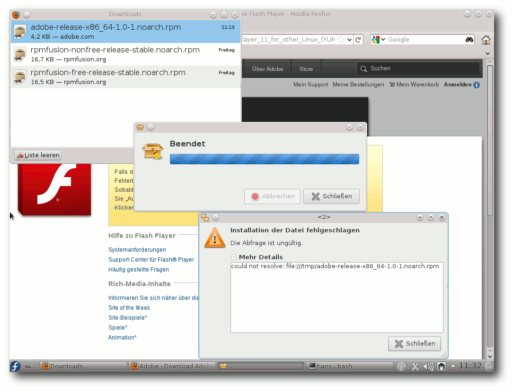

freiesMagazin Januar 2012
(ISSN 1867-7991)
Topthemen dieser Ausgabe
ReactOSDas Ziel von ReactOS soll sein, dass Programme und Treiber, die für Windows NT und dessen Nachfolger entwickelt wurden, auch unter ReactOS verwendbar sind. Das freie Betriebssystem ist in großen Teilen unter der GNU GPL lizenziert. Einige Bestandteile stehen hingegen unter BSD- und LGPL-Lizenz. Das Projekt selbst betitelt ReactOS nicht als Windows-Nachbau, sondern als ein zu Windows binärkompatibles Betriebssystem. (weiterlesen)
Selbstgebacken: Kernel kompilieren nach Rezept
Moderne Linux-Distributionen bringen alles mit: Vom Systemkern über die Anwendungen bis hin zu den bunten Rüschen der graphischen Oberfläche. Für viele Nutzer gehört das Anpassen des Desktops zur Pflicht, das manuelle Installieren von Programmen – meist in einer aktuelleren Version – ist dann die Kür. Den Kernel jedoch lassen viele in Ruhe und vertrauen hier lieber auf die Aktualisierungen des Distributors. (weiterlesen)
Kurzreview: Humble Indie Bundle 4
Das Humble Indie Bundle hat schon eine gewisse Tradition, so wurde die erste Version bereits im Mai 2010 veröffentlicht. Teil des Bundles sind Spiele, die von verschiedenen Independent-Studios entwickelt wurden und auf allen großen Plattformen Linux, Mac OS X und Windows laufen. Mitte Dezember 2011 wurde die vierte Version veröffentlicht, auf deren Inhalt in dem Artikel ein kleiner Blick geworfen werden soll. (weiterlesen)
Zum Index
Inhalt
Linux allgemeinReactOS
Fedora 16
Anleitungen
Kernel kompilieren nach Rezept
OpenShift – Entwickeln in der Cloud
Perl-Tutorium – Teil 5: Subroutinen, Namensräume und Geltungsbereiche
PHP-Programmierung – Teil 4: MySQL und PHP
Software
Kurzreview: Humble Indie Bundle 4
Theme Hospital & CorsixTH
Community
Rezension: JavaScript – Visual Quickstart Guide (8th Edition)
Rezension: X-Plane kompakt
Magazin
Editorial
Gewinner des vierten Programmierwettbewerbs
Leserbriefe
Veranstaltungen
Vorschau
Konventionen
Impressum
Zum Index
Editorial
Vierter Programmierwettbewerb
Wie auf der freiesMagazin-Webseite bereits Mitte Dezember zu lesen war [1], wurde der Wettbewerb erfolgreich beendet und 26 Teilnehmer kämpften um die vorderen drei Ränge. Im Artikel „Gewinner des vierten Programmierwettbewerbs“ findet man eine ausführliche Vorstellung der teilnehmenden Bots. Wir möchten uns an dieser Stelle noch einmal bei allen Teilnehmern bedanken und freuen uns bereits auf den nächsten Wettbewerb. Wenn die Teilnahmequote immer so hoch liegt, sollte ein Programmierwettbewerb auch in Zukunft kein Problem sein.Logoänderungen
Eher subtil kommt eine Änderung am freiesMagazin-Logo daher. Arne Weinberg hat uns einen neuen Entwurf zugesandt, den wir gerne angenommen haben. So befindet sich der Schatten des Icons nun nicht mehr dahinter, sondern als Verlauf im Icon selbst. Entsprechend wurden auch unsere Logos und Icons auf der Extras-Seite [2] aktualisiert. Als zusätzliche Änderung stehen die neuen Logos nun wie der gesamte Inhalt von freiesMagazin unter der Lizenz „Creative Commons Namensnennung-Weitergabe unter gleichen Bedingungen 3.0 Unported“ [3] und nicht mehr unter der GNU FDL, wie dies bisher der Fall war. Die Vereinheitlichung macht die Benutzung und Weitergabe des Magazins für Sie, aber auch für uns etwas einfacher.Jahresrückblick
Einen kleinen Jahresrückblick soll es auch wieder geben. Insgesamt wurden in den zwölf Monaten 114 Artikel geschrieben, die sich auf 40 freiwillige Autoren aufteilen. Im Schnitt gab es also 10 Artikel pro Ausgabe. Seitentechnisch spiegelte sich das so wieder, dass eine freiesMagazin-Ausgabe pro Schnitt 50 Seiten umfasst – und das Monat für Monat. Die Downloadzahlen des Magazins in 2011 schwankten wie immer recht stark. Für eine neue freiesMagazin-Ausgabe gab es durchschnittlich 8456 PDF-Downloads im Monat der Veröffentlichung. Der schlechteste Monat war dabei der März 2011 mit nur 7067 PDF-Downloads, wohingegen der Juni 2011 mit 10793 den Höchstwert des Jahres erzielte. Bei der HTML-Version schwankten die Zahlen etwas weniger und lagen immer um die 3000 Klicks, wobei man zum Jahresende sogar eine kleine Steigerung sehen konnte. Es sei angemerkt, dass die Zahlen nicht exakt sein müssen und man daraus auch nicht ableiten kann, wie viele Leser freiesMagazin wirklich hat, denn die Weitergabe als PDF oder als Ausdruck ist ohne Probleme möglich (und sogar gewollt). Daneben wird die HTML-Version sicher auch von einer Person manchmal mehrfach aufgerufen.Downloads: PDF- (blau) und HTML-Version (orange).
Echte Mobilversion
Nachdem sehr oft der Wunsch nach einer echten Mobilversion von freiesMagazin an uns herangetragen wurde, haben wir versucht, mit Sigil [4] ein EPUB zu erstellen, was nun fleißig getestet werden soll. Die Umfrage vor einem Jahr [5] deutet zwar nicht unbedingt darauf hin, dass ein EPUB notwendig ist, aber im Laufe des Jahres 2011 sind Ebook-Reader und vor allem Touchpads immer mehr in Mode gekommen, sodass wir uns hier nicht verschließen wollen. Wir haben uns für eine Umsetzung mit Sigil entschieden, da die Ergebnisse mit Calibre [6] im direkten Vergleich ziemlich schlecht waren, was Schriftbild und Seitengestaltung anging. Da wir selbst aber kaum Testmöglichkeiten haben, sind nun Sie alle aufgerufen, das EPUB auf Ihr mobiles Gerät zu transportieren und zu testen. Bitte teilen Sie uns über den Kommentarlink am Ende des Artikels oder direkt über[1] http://www.freiesmagazin.de/20111211-gewinner-des-vierten-programmierwettbewerbs
[2] http://www.freiesmagazin.de/extras
[3] http://creativecommons.org/licenses/by-sa/3.0/deed.de
[4] https://code.google.com/p/sigil/
[5] http://calibre-ebook.com/
[6] http://www.freiesmagazin.de/20110110-umfrage-mobilversion-freiesmagazin
[7] http://www.freiesmagazin.de/20120108-welche-epub-version-bevorzugen-sie
Das Editorial kommentieren
Zum Index
ReactOS
von Sujeevan Vijayakumaran Das Ziel von ReactOS [1] soll sein, dass Programme und Treiber, die für Windows NT und dessen Nachfolger entwickelt wurden, auch unter ReactOS verwendbar sind. Das freie Betriebssystem ist in großen Teilen unter der GNU GPL lizenziert. Einige Bestandteile stehen hingegen unter BSD- und LGPL-Lizenz. Das Projekt selbst betitelt ReactOS nicht als Windows-Nachbau, sondern als ein zu Windows binärkompatibles Betriebssystem.Allgemeines
ReactOS [2] wird anhand von öffentlichen Dokumentationen zu Windows geschrieben. Die Entwickler versuchen durch diese Dokumentationen zu verstehen, wie Windows funktioniert und arbeitet. Die gesamte Entwicklung geschieht durch Reverse Engineering [3], da die Systemfunktionen rekonstruiert werden. Problematisch für die Entwicklung des Systems ist, dass viele Applikationen Programmierschnittstellen aufrufen, die nicht öffentlich dokumentiert sind. Es fließt kein originaler Windows-Code hinein, sodass ReactOS völlig legal bleibt, da nur öffentliche Informationen zur Entwicklung genutzt werden. ReactOS basiert weder auf Unix noch auf Microsoft Windows. Die Kernbestandteile des Systems wurden von Grund auf neu geschrieben, da nichts von anderen Projekten wie Linux oder BSD übernommen werden konnte. Es werden jedoch die unabhängigen Bibliotheken des Wine-Projektes [4] verwendet, da diese ohne größere Probleme genutzt werden können.Geschichte
Die Geschichte von ReactOS beginnt im Jahr 1996. Damals wurde das Projekt unter dem Namen „FreeWin95“ ins Leben gerufen. Zu Projektbeginn wurde lange Zeit reichlich diskutiert, wie man das Projekt gestalten soll, bis es nach und nach zum Erliegen kam ohne etwas vorweisen zu können. Der Projektkoordinator Jason Filby rief im Jahr 1998 in der Mailingliste das Projekt erneut auf. Das Projekt wurde fortan unter dem Namen „ReactOS“ weitergeführt, so wie es heute noch heißt. Einige Jahre lang wurde der Kernel von einem engen Entwicklerkreis geschrieben, sodass die Entwicklung nur ziemlich langsam voran ging. Nachdem der Kernel stabiler wurde und die ersten Treiber eingeflossen waren, konnten dann mehr Personen in die Entwicklung einsteigen. Über die Jahre entwickelte das Team von ReactOS das System weiter. Die aktuelle Version ist eine Alpha-Version mit der Versionsbezeichnung 0.3.13, die im März 2011 veröffentlicht wurde.Download und Installation
Die Webseite von ReactOS bietet vier verschiedene Endbenutzer-Pakete zum Herunterladen an [5]. Neben einer normalen Installations-CD gibt es noch eine Live-CD und vorinstallierte virtuelle Maschinen für QEMU und VMWare. Die Größe der Installations-CD beträgt knapp 63 MB und liegt als 32-Bit-Variante vor. Die Installation von ReactOS ist sehr stark an den Installationsprozess von Windows XP angelehnt. Beim Start der Installation ist es zunächst möglich, die Sprache zu wählen, die das System verwenden soll. Darunter ist auch die deutsche Sprache. Im nächsten Schritt erscheinen einige Warnhinweise. Da ReactOS eine frühe Alpha-Version ist, ist auch der Installationsprozess mit einigen Einschränkungen verbunden. So kann das Setup nur eine primäre Partition auf der Festplatte verwalten, und es ist nicht möglich, eine primäre Partition von der Festplatte zu löschen. Ebenfalls kann das Setup die erste erweiterte Partition nicht löschen, bis weitere erweiterte Partitionen auf der Festplatte existieren. Weiterhin wird nur FAT als Dateisystem unterstützt. In der nächsten Stufe sind nochmals die aktuellen Geräteeinstellungen aufgelistet, darunter unter anderem die Bildschirmauflösung und das Tastaturlayout. In der darauf folgenden Phase kann man die Festplatte partitionieren. Da für diesen Artikel die Installation in einer VirtualBox-Instanz durchgeführt wurde, wurde nur eine Partition mit der Größe von 8 GB verwendet, welche mit dem FAT32-Dateisystem formatiert wird.Partitionieren während der Installation.
Nach der Partitionierung muss man das Installationsverzeichnis für ReactOS wählen. Als Vorschlag wird hier \ReactOS aufgeführt, das in diesem Installationsprozess auch verwendet wird. Im nächsten Schritt wird die Installation ausgeführt, welche recht zügig vonstatten geht und innerhalb weniger Sekunden beendet ist. Danach gibt es ein Auswahlmenü, um den Boot-Loader auf die Festplatte oder auf eine Diskette zu installieren. Es ist auch möglich, den Boot-Loader nicht zu installieren. Nach diesem Schritt ist der Installationsprozess fertig und die Einrichtung des Systems kann nach einem Neustart fortgeführt werden. Nach dem Neustart läuft zuerst der Setup-Assistent von ReactOS. Ab diesem Punkt ist eine graphische Oberfläche vorhanden. Zunächst bedankt sich ReactOS bei vielen Open-Source-Projekten, von denen teilweise Code verwendet wird. Darunter unter anderem Wine, FreeBSD und X. Auch die weiteren Schritte sind an die Windows-XP-Installation angelehnt. Nach der Angabe des eigenen Namens geht es mit dem Setzen des Computernamens und eines Administratorpassworts weiter. Im nächsten Abschnitt kann man nochmals die regionalen Einstellungen ändern. Darunter fällt nicht nur das Tastaturlayout, sondern auch die Darstellung von Zahlen, Währungen und des Datums. Nach dem Setzen der aktuellen Uhrzeit und des Datums wird die Installation fertig gestellt und nach einem weiteren Neustart wird das System erstmals richtig gestartet.
Der Setup-Assistent.
Der erste Start
Beim ersten Start des Systems zeigt sich nun auch der Desktop. Zunächst erscheint jedoch bei dieser Systeminstallation der Aufruf zur Installation der Treiber für die Audiogeräte. Die Treiber können wahlweise automatisch oder aus einem bestimmten Verzeichnis installiert werden. Vor der Installation wird jedoch auch ausdrücklich gewarnt, dass durch den Prozess der Rechner abstürzen kann oder auch das Starten des Systems dann nicht mehr ordnungsgemäß funktioniert. Die automatische Installation schlug im Test jedoch sowohl für die Audio-Treiber als auch für „System-Device“ fehl.Die Arbeitsoberfläche von ReactOS.
Während der Installationsprozess stark an Windows XP angelehnt ist, sieht der Desktop wiederum nach Windows 2000 aus. Auf der Arbeitsoberfläche liegen standardmäßig sechs Icons. Auf der Schnellstartleiste liegen zwei Icons. Mit dem einen kann man alle offenen Fenster minimieren und den Desktop darstellen lassen. Mit dem anderen kann der ReactOS-Explorer geöffnet werden. Daneben gibt es Schaltflächen, um zwischen zwei Desktops zu wechseln, wie man es unter Linux kennt.
Das Startmenü in ReactOS
Anwendungen
Die Anzahl der vorinstallierten Anwendungen ist sehr überschaubar. Neben einem Editor und einem Taschenrechner sind zudem noch Nachbauten von Paint und Wordpad installiert. Des Weiteren ist unter anderem ein Multimedia-Player und ein Audio-Recorder mit dabei. Neben einigen wenigen weiteren Programmen sind auch drei Spiele-Klone mit an Bord, darunter die Windows-Spiele-Klassiker „Spider Solitaire“ und „Minesweeper“ unter dem Namen „WineMine“. Das System wird standardmäßig mit einer Paketverwaltung mit dem Namen „ReactOS-Anwendungsmanager“ ausgeliefert, womit man einige Programme installieren kann. Die Anzahl der Programme ist jedoch sehr übersichtlich und besteht derzeit aus 76 Anwendungen. Die Anwendungen sind in verschiedene thematische Kategorien unterteilt. Viele Kategorien wie Video, Edutainment, Technische Anwendungen, Finanzen und Wissenschaft sind allerdings leer. Unter den Programmen finden sich durchaus bekannte Anwendungen, wie beispielsweise VLC Media Player, LibreOffice und Firefox. Jede dieser Anwendungen liegt in einer aktuellen Version vor. Der Versuch, LibreOffice zu installieren, schlug fehl. Es erschien lediglich kurzzeitig ein Fenster, welches sehr schnell wieder verschwand. OpenOffice.org in Version 3.3 ließ sich zwar problemlos installieren, stürzte jedoch beim Start des Programms mit einer Fehlermeldung ab. Die Installation und der Betrieb des Browsers Firefox funktionierte hingegen problemlos. Im Anwendungsmanager gibt es zwar eine Sektion, in dem die bereits installierten Anwendungen aufgelistet werden, die probeweise installierten Programme Firefox und OpenOffice.org wurden dort aber nicht aufgelistet. In einem weiteren Test wurde ebenfalls über den ReactOS-Anwendungsmanager versucht, 7-Zip zu installieren. Diese Installation funktionierte und auch das Programm ließ sich normal starten. Diesmal gab es sogar einen Eintrag von 7-Zip in der entsprechenden Liste des Anwendungsmanagers. Danach wurde noch versucht, GIMP und Pidgin zu installieren, wobei beide Programme direkt von den Projekt-Webseiten heruntergeladen wurden. Auch hier funktionierte die Installation, der Start scheiterte hingegen erneut. Bei GIMP folgte eine Fehlermeldung, dass eine Bibliothek von GIMP fehlt und eine Neuinstallation das Problem möglicherweise beheben könnte. Die Meldung erschien dann noch weitere Male, sodass nur ein Neustart half, die Meldungen zu beenden. Die Deinstallation von Programmen läuft ebenfalls über den Anwendungsmanager. Problematisch ist, dass dort nicht alle installierten Programme aufgelistet werden. Ein Entfernen von GIMP oder Pidgin war daher nicht möglich. Da nur 7-Zip unter den getesteten Programmen enthalten war, konnte auch nur dieses deinstalliert werden. Beim Versuch es zu entfernen, startete ReactOS plötzlich neu. Nach dem Start des Systems waren die Menüeinträge von 7-Zip entfernt, der Eintrag im Anwendungsmanager war hingegen noch vorhanden.Der Anwendungsmanager
System
Das System ist momentan noch ziemlich schlicht gehalten, sowohl optisch als auch vom Funktionsumfang. Es startet in einer VirtualBox-Instanz innerhalb von wenigen Sekunden, was jedoch damit zu erklären ist, dass es nicht eine annähernd große Funktionalität mit sich bringt wie Windows oder eine aktuelle Linux-Distribution. Die Geschwindigkeit des Systems lässt sich auch nur relativ ausdrücken. Momentan funktioniert das meiste relativ flott, was – wie beim Systemstart auch – mit der fehlenden Funktionalität zusammenhängt, die bis zu einer möglichen finalen Version noch hinzukommt. Die Auslastung des Arbeitsspeichers ist verhältnismäßig gering und beträgt bei einem frisch installierten System knapp 60 MB. Es steigert sich während der Benutzung jedoch recht schnell auf etwa 100 MB. Auf der Festplatte werden anfangs 558 MB belegt. Wie bereits oben erwähnt, lässt sich ReactOS zur Zeit nur auf einer FAT32-Partition installieren. Der größte Nachteil, der dadurch entsteht ist, dass die Größe einer Datei 4 GB nicht überschreiten kann. Auf der Seite über die meist gestellten Fragen [6] nennt das Projekt die Gründe, warum noch kein NTFS als Dateisystem unterstützt wird. Zum einen existieren zu NTFS keine Dokumentationen, dadurch ist es für die Entwickler sehr schwierig, ein einwandfrei funktionierendes Dateisystem zu programmieren. Zum anderen ist NTFS ein sehr komplexes Dateisystem. Bei diesem Punkt stellt sich daher auch die Frage, wie die NTFS-Unterstützung unter Linux funktioniert. In dem Fall wird unter Linux kein natives NTFS unterstützt, sondern es wird NTFS-3G [7] verwendet, welches nur als Treiber für NTFS-Dateisysteme fungiert. Es setzt hierbei auf FUSE [8] auf. FUSE ist ein Kernel-Modul, das es ermöglicht, das Einbinden von Dateisystem-Treibern vom Kernel-Mode in den User-Mode zu verlagern. ReactOS möchte im Gegensatz zu Linux oder anderen Systemen eine native NTFS-Unterstützung haben. Zur Zeit ist die Priorität für NTFS seitens der Entwickler eher gering, da andere Teile von ReactOS aktuell wichtiger sind. Beim Durchstöbern des Systems fällt schnell auf, dass einige Programme vorhanden sind, für die unter Windows keine Menüpunkte existieren. Dazu zählen zum Beispiel der Registry-Editor oder das Tool msconfig, um unter anderem Autostart-Programme zu deaktivieren. Weiterhin wird klar, dass Einiges zwar schon grafisch implementiert wurde, die wirkliche Funktion dahinter aber noch fehlt. So stößt man durchaus mal auf einen Button, der beim Klick nur ein Fenster öffnet, in dem man informiert wird, dass die Funktion noch nicht implementiert ist.Mitmachen
Die Webseite von ReactOS bietet eine spezielle Seite für den Einstieg in die Entwicklung von ReactOS [9]. Wie auch bei anderen Open-Source-Projekten ist das Mitmachen bei dem Projekt wichtig, damit die Entwicklung stets voran geht. Es werden neben Entwicklern auch Autoren für Dokumentationen und Server-Administratoren für die Infrastruktur benötigt. Bei neuen Entwicklern ist zu beachten, dass nur die Entwickler programmieren dürfen, die keinen Kontakt zu originalem Microsoft-Code haben, sofern es diesen Bereich betrifft, da hier eine Beeinflussung vorhanden sein könnte. ReactOS möchte so sicherstellen, dass der Quelltext des Projekts legal bleibt. Neben den bereits genannten Einsatzgebieten werden ebenfalls noch weitere Helfer für das Übersetzen und Designen von ReactOS benötigt. Spenden werden ebenfalls entgegen genommen.Blick in die Zukunft
Die Zukunft von ReactOS sieht langfristig den Ausbau der aktuellen Alpha-Version in eine Beta-Version mit der Nummer 0.5 vor. Später soll dann das erste stabile Release mit der Versionsnummer 1.0 folgen. Wie lange dies noch dauert, lässt sich nicht abschätzen, da eine große Anzahl der Entwickler nicht kontinuierlich zum Projekt beiträgt. Aus diesen Gründen sei es schwierig, einen Zeitplan zu nennen, da dieser nicht einzuhalten wäre, so die Aussage des ReactOS-Teams auf der Wikiseite der Roadmap [10]. Das Team versucht trotzdem, etwa jedes halbe Jahr eine weitere Alphaversion zu veröffentlichen. Der Entwicklungsplan von ReactOS ist momentan nur ziemlich spärlich vorhanden. Für die nächste Version 0.4.0 sind ein Plug-and-play-Manager und einige Netzwerk- und Serverapplikationen geplant, wie etwa ein DHCP- und ein Telnet-Server. Des Weiteren ist die volle Unterstützung von USB-Tastaturen und -Mäusen, Audio-Treibern und Windows 7 geplant. Außerdem soll es dann auch eine volle native Unterstützung des Dateisystems NTFS geben. Weiterhin ist noch die Unterstützung von Mehrkernprozessoren angedacht, da bisher lediglich ein Prozessorkern unterstützt wird. Zudem ist zur Zeit nur eine 32-Bit-Version von ReactOS verfügbar. Wann eine 64-Bit-Version erscheint, ist noch unklar. Im September 2011 wurde das Projekt dem damaligen russischen Präsidenten Dmitri Medwedew vorgestellt, als dieser eine Schule besuchte [11]. Ein 17-jähriger Schüler erhielt dadurch die Möglichkeit, ReactOS dem russischen Präsidenten zu zeigen. Laut den Informationen des Schülers brauche das Projekt etwa eine Million Euro, um die Entwicklung innerhalb eines Jahres abschließen zu können. Medwedew fand das Projekt interessant, sagte jedoch nichts über eine finanzielle Unterstützung. So wurde zumindest das Projekt der Regierung eines Staates bekannt und machte deutlich, dass das Projekt durch einen großen Geldbetrag sehr gut gefördert werden kann, damit die Entwicklung zügig voran geht. Bis dahin kann die Entwicklung bis zur ersten stabilen Version durchaus noch einige Jahre in Anspruch nehmen.Kritik
Es gibt einige Kritiker, die keinen Sinn in der Entwicklung von ReactOS sehen. Als Grund wird häufig angeführt, dass man die Entwicklungsarbeit lieber in andere Projekte, wie etwa Wine, stecken sollte, statt in ein binärkompatibles Windows. Zudem ist ReactOS mittlerweile ziemlich alt, da die Entwicklung schon vor einigen Jahren begann. Windows selbst hat sich seit dieser Zeit deutlich weiterentwickelt. Fakt ist, dass ReactOS kein Linux ist, und mit Linux an sich nichts zu tun hat. Daher wird es normale Linux-Nutzer auch kaum ansprechen. Der Vorteil, den ReactOS gegenüber Wine unter Linux hat, ist, dass ein fertiges ReactOS Windows-Treiber installieren kann. Das ist ein wichtiger Punkt, besonders für sehr alte Hardware, für die es weder lauffähige Treiber für aktuelle Windows-Versionen noch für Linux gibt. Für mich hat ReactOS den Vorteil, dass es als Windows-Ersatz auf alten Rechnern dienen kann, besonders für die Nutzer, die kein Linux verwenden möchten. Allerdings nur unter der Voraussetzung, dass in naher Zukunft eine stabile Version erscheint.Fazit
Zum aktuellen Entwicklungsstand kann man kaum ein richtiges Fazit ziehen. Klar ist, dass es wirklich eine sehr frühe Alpha-Version ist und viele Systemkomponenten noch nicht bzw. nicht einwandfrei implementiert sind. Die Installation des Systems war der Punkt, der bei den Tests größtenteils problemlos funktionierte. Dies ist jedoch bislang noch mit Einschränkungen verbunden, da u. a. nur FAT32-Partitionen unterstützt werden. Besonders schlecht sieht es im Moment im Bereich der Anwendungen aus. Gängige Programme ließen sich zwar installieren, aber am Ende funktionierten nur Firefox und 7-Zip. Man darf gespannt sein, wie sich ReactOS weiter entwickeln wird. Bis zu einer Beta-Version fehlt neben der Funktionalität auch die Stabilität. Bis ReactOS ein fertiges und reifes Betriebssystem ist, kann durchaus noch viel Zeit vergehen, da bis zum jetzigen Zeitpunkt die Entwicklung eher mäßig voran geht. Beschleunigt werden kann dies möglicherweise nur durch größere Spenden. Links[1] http://www.reactos.org/de/
[2] http://de.wikipedia.org/wiki/Reactos
[3] http://de.wikipedia.org/wiki/Reverse_Engineering
[4] http://www.winehq.org/
[5] http://www.reactos.org/de/download.html
[6] http://www.reactos.org/de/about_userfaq.html
[7] http://de.wikipedia.org/wiki/NTFS-3G
[8] http://de.wikipedia.org/wiki/Filesystem_in_Userspace
[9] http://www.reactos.org/de/dev.html
[10] http://www.reactos.org/wiki/Roadmap
[11] http://www.pro-linux.de/news/1/17502/russland-koennte-fertigstellung-von-reactos-finanzieren.html
| Autoreninformation |
| Sujeevan Vijayakumaran (Webseite) interessiert sich für ein freies, zu Windows binärkompatibles Betriebssystem und beobachtet daher die Entwicklung von ReactOS. |
Diesen Artikel kommentieren
Zum Index
Fedora 16
von Hans-Joachim Baader Das neu erschienene Fedora 16 will den Benutzern wie jedes halbe Jahr die neueste Freie Software und neueste Technologien bringen. Redaktioneller Hinweis: Der Artikel „Fedora 16“ erschien erstmals bei Pro-Linux [1].Vorwort
Etwas später als ursprünglich geplant, erschien Fedora 16 als Nachfolger des ein halbes Jahr alten Fedora 15 (siehe freiesMagazin 07/2011 [2]). Der Schwerpunkt dieser Version ist offenbar die Cloud. Ansonsten enthält die Distribution zwar viele Updates, aber keine tiefgreifenden Änderungen. Diese Aussage gilt auch für die beiden populärsten Desktopumgebungen, GNOME und KDE. Auf Systemebene kam es zur Einführung des Bootloaders GRUB 2 und der Entfernung von HAL. Beides dürfte den meisten Benutzern kaum auffallen. Fedora 16 wurde dem kürzlich verstorbenen Unix-Pionier Dennis Ritchie gewidmet [3]. Weitere Neuerungen gab es unter anderem bei der Virtualisierung. So wird USB 2.0 in Gastsystemen unterstützt, Gastinspektion ist möglich, ein virtueller Lock-Manager und ein auf pvops beruhender Kernel für Xen wurden hinzugefügt. Zu beachten ist auch, dass sich bei den numerischen Benutzer- und Gruppen-IDs etwas geändert hat. Die IDs für normale Benutzer beginnen jetzt wie bei anderen Distributionen bei 1000, nicht mehr bei 500.Fedoras Einrichtungsassistent.
Für Entwickler bietet Fedora 16 unter anderem vollständige Entwicklungsumgebungen für Ada, D und Haskell und das verteilte Bugtracking-System Be. Im Umfeld kam Ask Fedora [4] hinzu, eine Wissensplattform, auf der Anwender Fragen und Vorschläge einreichen können. Die Plattform soll besonders einfach zugänglich sein, da kein Log-in benötigt wird. Dieser Artikel wird sich auf die Desktopumgebungen GNOME und KDE beschränken. Aus praktischen Gründen sind auch andere Einschränkungen nötig. So wurden natürlich zahlreiche zur Distribution gehörende Softwarepakete geändert oder ersetzt. Mit wenigen Ausnahmen kann auf diese Änderungen nicht eingegangen werden; man darf annehmen, dass die meisten Pakete unter allen aktuellen Distributionen nahezu gleich sind und überall gleich gut funktionieren. Wie immer sei angemerkt, dass es sich hier nicht um einen Test der Hardwarekompatibilität handelt. Es ist bekannt, dass Linux mehr Hardware unterstützt als jedes andere Betriebssystem, und das überwiegend bereits im Standard-Lieferumfang. Ein Test spezifischer Hardware wäre zu viel Aufwand für wenig Nutzen. Falls man auf Probleme mit der Hardware stößt, stehen die Webseiten von Fedora zur Lösung bereit. Da eine Erprobung auf realer Hardware nicht das Ziel des Artikels ist, werden für den Artikel zwei identische virtuelle Maschinen, 64 Bit, unter KVM mit jeweils 768 MB RAM verwendet. Außerdem wurde ein Netbook mit 32-Bit-CPU, aber funktionierender Grafikbeschleunigung, von Fedora 15 auf 16 aktualisiert.
Bootprompt von GRUB 2.
Installation
Fedora kann von DVD, einem Satz von CDs, Live-CDs oder minimalen Bootmedien installiert werden. Natürlich kann man aus einem ISO-Image auch ein USB-Medium für die Installation erstellen. Die Live-CDs, in den Varianten GNOME und KDE, sind aufgrund ihres geringen Umfangs eher eine Notlösung für die Installation, denn es fehlen dann unter anderem LibreOffice und Übersetzungen. Zwar erfolgt die Installation binnen Minuten, da hierbei offenbar mehr oder weniger nur ein Abbild der CD auf die Platte geschrieben wird, aber für normale, vollständige Installationen sind die DVD oder das minimale Image vorzuziehen, bei dem die eigentliche Distribution über das Netz installiert wird. Die Installation von Fedora erfordert mindestens 640 MB RAM. Damit wurde die verhältnismäßig hohe Anforderung von 768 MB in Version 15 leicht reduziert, das Ziel von 512 MB aber verfehlt. Für den Betrieb werden mehr als 1 GB empfohlen, was aber allenfalls für ziemlich alte Rechner zu einem Problem wird. Die grafische Installation ist gegenüber Fedora 15 nahezu unverändert. Bei der Partitionierung, die wie immer zahlreiche Optionen bietet, gab es aber eine wichtige Änderung. Statt MSDOS-Partitionstabellen wird nun GPT verwendet. Damit man davon auch booten kann, muss man in vielen (allerdings nicht allen) Fällen eine etwa 1 MB große BIOS-Boot-Partition anlegen. Bei der manuellen Partitionierung geht das ganz einfach, indem man eine neue Partition anlegt und als Typ „BIOS Boot“ auswählt. Vergisst man das, erhält man eine Fehlermeldung „Sie haben kein Zielgerät für Bootloader Stage 1 eingerichtet“ und muss diesen Schritt nachholen.Auswahl der Partitionierungsmethode.
Bei der automatischen Partitionierung wird die BIOS-Boot-Partition natürlich selbständig angelegt. Allerdings macht die Installation die /boot-Partition 500 MB groß. Ich habe noch nie mehr als 200 MB auch nur annähernd benötigt und halte die 500 MB daher für zu groß, besonders bei kleineren Festplatten (man denke an SSDs). Als zusätzliche Neuerung kann man nun wählen, ob man LVM verwenden will oder nicht. Die Benutzung von GPT ermöglicht bis zu 128 Partitionen, somit haben einige Anwender nun keinen Anlass mehr, LVM einzusetzen. Dennoch ist LVM wesentlich flexibler als die anderen Optionen. Verschlüsselung und RAID sind weiterhin verfügbar. Auch das Dateisystem Btrfs steht als Option bei der Installation zur Verfügung, aber das Standard-Dateisystem ist weiterhin ext4. Ein Nachteil von Btrfs ist nach wie vor das Fehlen des Werkzeugs btrfsck für Dateisystemreparaturen, ein zweiter die Tatsache, dass das Dateisystem noch nicht so erprobt ist. Vielleicht wird die geplante Erhebung von Btrfs zum Standard-Dateisystem in Fedora 17 kommen. Somit kann man sagen, dass bezüglich der Partitionierung auch weiterhin niemand Fedora etwas vormachen kann. Im eigens bereitgestellten Installationshandbuch [5] werden alle verfügbaren Optionen erörtert und Tipps gegeben. Dort wird auch eine separate Home-Partition empfohlen, wenn möglich verschlüsselt. Wählt man allerdings die Standard-Partitionierung bei der Installation, wird keine Home-Partition angelegt.
Ausstattung
Dass nahezu alle Softwarepakete, bei denen das möglich war, aktualisiert wurden, versteht sich von selbst. Als Kernel kommt nun eine erweiterte Version 3.1 zum Einsatz. Als Desktop-Systeme stehen unter anderem KDE SC 4.7.2 und GNOME 3.2.1, teils mit Updates, zur Verfügung. Der Standard-Browser unter GNOME ist Firefox 7.0.1. Unter KDE steht neben dem etatmäßigen Konqueror ebenfalls Firefox zur Verfügung. Auf 64-Bit-Systemen liegt Firefox als 64-Bit-Version vor. Die Standard-Office-Suite auf beiden Desktops ist LibreOffice 3.4.3.Vorausgewählte Software.
Fedora 16 startet etwa genauso schnell wie sein Vorgänger. Wie immer ist SELinux eingebunden und aktiviert. Als normaler Benutzer merkt man überhaupt nichts davon, solange die Konfiguration korrekt ist. In Fedora 16 trat kein sichtbares Problem im Zusammenhang mit SELinux auf. Für den Fall, dass ein Problem auftritt, sei es nach der Installation von zusätzlicher Software oder anderen Änderungen, steht ein Diagnosewerkzeug zur Verfügung. GNOME 3 benötigt in Fedora 16 direkt nach dem Start mit einem geöffneten Terminal-Fenster etwa 260 MB RAM, KDE etwa 420 MB. Bei der Geschwindigkeit lässt sich kein nennenswerter Unterschied zwischen den Desktops feststellen, sofern genug RAM vorhanden ist. Für KDE bedeutet das, dass man mindestens 768 MB RAM haben sollte (was weniger als die offizielle Empfehlung von Fedora ist). Die Angaben zum Speicherverbrauch sind nur als Anhaltswerte zu sehen, die sich je nach Hardware und Messzeitpunkt erheblich unterscheiden können.
GNOME
GNOME 3.2 ist der Standard-Desktop von Fedora 16, wenn man nicht ausdrücklich KDE, Xfce, LXDE oder anderes auswählt. Gegenüber GNOME 3.0, das die erste Version einer ganz neuen Generation von GNOME darstellte, wurden zahlreiche allgemeine Verbesserungen integriert. Auch in dieser Version benötigt die GNOME-Shell eine 3-D-Beschleunigung; ohne dieselbe gibt es nur den Fallback-Modus oder, wie Fedora es nennt, den Ausweichmodus. Dieser ähnelt noch GNOME 2, hat aber im Grunde nicht mehr viel damit zu tun. In der nächsten Version von GNOME und damit auch Fedora soll er ganz verschwinden, da die GNOME-Shell dann auch auf unbeschleunigter Grafik laufen soll.Desktop im Ausweichmodus.
In der GNOME-Shell wurden keine bedeutenden Änderungen vorgenommen, lediglich kleinere Verbesserungen. Offenbar sind die Entwickler und Benutzer der GNOME-Shell mit der grundsätzlichen Implementierung so zufrieden, dass sie keine Notwendigkeit für größere Änderungen sahen. Wegen der Ähnlichkeit mit der Version 3.0 ist es an dieser Stelle nicht nötig, nochmals auf die GNOME-Shell einzugehen. Selbstverständlich erfordert sie etwas Gewöhnung; sie ist aber ziemlich intuitiv und auch in der Praxis effizient nutzbar, wenn man die eher umständlichen Maus-Aktionen durch Tastenkürzel ergänzt. Oberflächlich ähnelt die GNOME-Shell Unity von Ubuntu. Unter der Haube ist jedoch alles anders. Die GNOME-Shell ist stabil, äußerst durchdacht und weist keines der Probleme auf, die Unity in Ubuntu 11.10 mit sich bringt. Das Konzept der „Linsen“ von Unity ist allerdings besser und flexibler als die Suchfunktion der GNOME-Shell. In diesem Bereich könnte die Shell spürbar verbessert werden.
Desktop im 3-D-Modus.
Noch immer lässt sich GNOME 3 nicht perfekt an eigene Vorstellungen anpassen, aber immerhin kommt es nahe heran. Man kann dconf-editor installieren, um direkten Zugriff auf alle GNOME-Einstellungen zu erhalten, aber bei solchen Dingen sollte man wissen, was man tut. Zudem besitzen die GNOME-Shell und Mutter auch da nur sehr wenige Einstellungen. Einige weitere Einstellungen werden mit dem gnome-tweak-tool zugänglich gemacht. Mittlerweile hilft sich die Gemeinschaft mit Plug-ins für die GNOME-Shell [6] selbst. Die Zahl der Shell-Erweiterungen dürfte schnell wachsen, da der Fantasie hierbei keine Grenzen gesetzt sind. Sie lassen sich über das gnome-tweak-tool installieren, aber noch einfacher geht es bei den etwa zwei Dutzend Paketen, die bereits in den Fedora-Repositorien liegen, da sie einfach über die Paketverwaltung installierbar sind.
Installation von Shell-Erweiterungen.
KDE
KDE liegt nun in Version 4.7.2 mit KDE-PIM 4.7.2 vor (inzwischen aktualisiert auf 4.7.3), deren wohl größte Neuerung die Überarbeitung der Aktivitäten ist. Nach wie vor dürfte es Benutzern schwerfallen, den Sinn von Aktivitäten zu sehen, da Arbeitsflächen auf den ersten Blick das gleiche leisten. Und da Dokumentation zu den Aktivitäten weitgehend fehlt, erschließt sich der Vorteil einfach nicht. Diverse KDE-Anwendungen wurden in der neuen Version natürlich auch stark verbessert, aber grundlegende Änderungen blieben aus. Über den normalen Umfang von KDE SC hinaus sind noch die Projektverwaltung Planner installiert (die sich allerdings sofort aufhängte), das Layoutprogramm Scribus, der Photo Layouts Editor und, aus unerfindlichem Grund, eine Reihe von GNOME-Programmen, von Evolution über Brasero bis Empathy. Das führt dazu, dass für eine Reihe von Aufgaben mindestens zwei Programme im Startmenü auftauchen, eines von GNOME und eines von KDE.Der leere KDE-Desktop.
Multimedia
Wegen der Softwarepatente in den USA kann Fedora, ebenso wie die meisten anderen Distributionen, nur wenige Medienformate abspielen, da es viele benötigte Codecs nicht mitliefern kann. Wenn man versucht, eine MP3- oder Videodatei abzuspielen, dann bieten die gängigen Player aber die Option an, über die Paketverwaltung nach passenden Plug-ins zu suchen. Leider fällt Rhythmbox nicht unter diese Kategorie. Das Programm schafft es nicht einmal, eine brauchbare Fehlermeldung zu produzieren, sondern meldet nur „Die Wiedergabe konnte nicht gestartet werden“. Damit die Suche in der Paketverwaltung Aussicht auf Erfolg hat, muss man vorher die zusätzlichen Repositorys von RPM Fusion eintragen. Wenn man weiß, wie es geht, ist es im Prinzip ganz einfach. Über die Webseite von RPM Fusion [7] kann man Pakete installieren, die die Repositorys hinzufügen. Dies gilt für GNOME wie für KDE. Nach dieser Vorbereitung sollten die Player unter GNOME und KDE in der Lage sein, die benötigten Plug-ins selbsttätig zu installieren. Merkwürdigerweise hat Totem aber ein Problem, wenn man ausgerechnet mit der Suche nach einem MP3-Plug-in anfängt und noch keine Codecs installiert sind – diese Suche schlägt fehl. Bei Videoformaten funktioniert es aber. Am schnellsten und einfachsten ist allerdings eine manuelle Installation der GStreamer-Plug-ins, insbesondere das Paket gstreamer-ffmpeg.Startfenster von Firefox 7.0.1.
Totem erscheint bei Installation von DVD auch unter KDE als Standard-Medienplayer, auch für MP3-Dateien. Kaffeine und Dragonplayer sind als Alternativen installiert. Beim Ausprobieren der Multimedia-Funktionen fiel auf, dass alle Anwendungen hängen können, wenn sie eine Sound-Ausgabe machen und diese blockiert wird. Das ist keine Kleinigkeit, denn mitunter können Dialogboxen fehlen, ohne deren Beendigung das Programm nicht fortgesetzt werden kann. Das Problem, das natürlich im Normalfall nicht auftritt, ist vielleicht PulseAudio anzulasten, aber eindeutig ließ sich das nicht klären. Die Flash-Situation in den Browsern bleibt mittelmäßig. Ohne den Adobe Flash Player geht nicht allzu viel. Gnash erfuhr in den letzten sechs Monaten kaum eine Weiterentwicklung und kann nur eine begrenzte Zahl von Flash-Videos im Web abspielen. Die freie Alternative Lightspark ist nun gar nicht mehr in den Repositorys enthalten. Die Installation des Adobe Flash Players ist ein zweistufiger Prozess, wenn man das Yum-Repo einbindet. Zunächst lädt man von Adobe eine RPM-Datei herunter, die das Repository anlegt. Dann kann man über die Paketverwaltung das eigentliche Plug-in installieren. Das Anlegen des Repositorys benötigt die Eingabe des Root-Passworts. Macht man hierbei einen Fehler, kann man sich in allerlei Schwierigkeiten bringen, da es keine Wiederholung der Eingabe gibt. Stattdessen verheddert sich das Programm, besonders wenn man es noch ein zweites Mal versucht, und man kann schließlich gezwungen sein, Fenster, die sich nicht mehr schließen lassen, manuell zu killen. Hat man dagegen das Passwort korrekt eingegeben, kann man anschließend das Flash-Plug-in über die Paketverwaltung installieren. Dies gilt jedenfalls für GNOME. Unter KDE dagegen stellte sich Apper als unfähig heraus, die RPM-Datei zu verarbeiten. Die Alternative zu Flash, das WebM-Format, sollte in Firefox seit Version 4 kaum Probleme bereiten, und im Großen und Ganzen scheint es zu funktionieren. In Konqueror allerdings funktionierten die meisten Videos überhaupt nicht, da das Plug-in regelmäßig abstürzte. Zum Testen von WebM kam es erst gar nicht. 
Die Installation eines RPMs direkt aus dem Browser scheitert.
Paketverwaltung und Updates
Wenig hat sich bei der Paketverwaltung getan, insbesondere unter GNOME. Sie funktioniert normalerweise reibungslos und die Updates, wenn sie auch zahlreich sind, sind dank Delta-RPMs oft erstaunlich klein und schnell installiert. In Fedora 16 wurde die seit einiger Zeit gute Erfahrung durch mehrere unerwartete Probleme getrübt. Nach einer Woche Betrieb kam es bei Operationen der Paketverwaltung, insbesondere beim Suchen nach Updates, zu einem Fehler, der erst durch die Ausführung von yum update klarer erkenntlich war:# yum update
database disk image is malformed
Der Fehler ist im Web nicht ganz unbekannt, scheint aber selten
aufzutreten. In diesem Fall half ein yum clean all.
Erstmals seit langer Zeit kam es zu einem weiteren Fehler in der
Paketverwaltung, der es unmöglich machte, bestimmte Updates zu
installieren.
Downloading Packages:
Running Transaction Check
ERROR with transaction check vs depsolve:
perl = 4:5.12.4-162.fc15 is needed by (installed) perl-Module-CoreList-0:2.50-162.fc15.noarch
Please report this error in http://yum.baseurl.org/report
** Found 1 pre-existing rpmdb problem(s), 'yum check' output follows:
perl-Module-CoreList-2.50-162.fc15.noarch has missing requires of perl = ('4', '5.12.4', '162.fc15')
In diesem Fall ist eine fehlerhafte Paketabhängigkeit zu vermuten.
Das Paket perl-Module-CoreList hätte wohl für Fedora 16 neu
generiert werden müssen, um von Perl 5.14 statt 5.12 abzuhängen.
Solche Fehler können in der Entwicklungsversion von Distributionen
auftreten; für freigegebene Versionen sind sie aber
nicht
akzeptabel. Eine Lösung des Problems steht noch aus.
KPackageKit unter KDE, das in der letzten Version endlich gut
funktionierte, wurde durch ein Programm namens Apper ersetzt. Nach
dem ersten Schreck stellt man aber fest, dass Apper KPackageKit
verdächtig ähnlich sieht, und in der Tat handelt es sich um
KPackageKit, das Programm wurde lediglich in Apper
umbenannt [8].
Auch weiterhin hat die Paketverwaltung ein Problem mit dem Verhalten
von Dialogboxen unter
KDE. Das Problem ist aber vielleicht eher KDE
selbst anzulasten. Möglicherweise aufgrund der Tatsache, dass
mehrere verschiedene Prozesse an der Paketverwaltung beteiligt sind,
kann es vorkommen, dass die Dialogbox, die zur Bestätigung die
Eingabe des Root-Passworts verlangt, hinter anderen Fenstern zu
liegen kommt, und wenn man nicht auf die Taskleiste achtet, kann man
sich darüber wundern, dass die Paketverwaltung keinerlei Fortschritt
mehr macht.
Running Transaction Check
ERROR with transaction check vs depsolve:
perl = 4:5.12.4-162.fc15 is needed by (installed) perl-Module-CoreList-0:2.50-162.fc15.noarch
Please report this error in http://yum.baseurl.org/report
** Found 1 pre-existing rpmdb problem(s), 'yum check' output follows:
perl-Module-CoreList-2.50-162.fc15.noarch has missing requires of perl = ('4', '5.12.4', '162.fc15')
Softwareverwaltung unter GNOME 3.2.
Fazit
Fedora 16 ist eine solide Distribution mit zahlreichen Features und stetigen Neuerungen. Es ist also eigentlich wie immer, mit nur wenigen Ausnahmen. Zu bemängeln ist dieses Mal unbedingt der Patzer in der Paketverwaltung, der Aktualisierungen verhindert und einfach nicht vorkommen darf, zumal Paketabhängigkeiten von geeigneten Testprogrammen geprüft werden können. Generell könnten die grafischen Werkzeuge zur Paketverwaltung mehr Robustheit vertragen. Dieser Fehler reiht sich in die Probleme ein, die Fedora in der ersten Zeit nach der Veröffentlichung immer mit sich bringt. Wer sich nicht mit der Lösung dieser Probleme aufhalten kann, sollte mit dem Update auf Fedora 16 einige Zeit warten. Viele Benutzer schätzen Fedora trotzdem als Distribution, die Neuerungen schnellstmöglich zu den Anwendern bringt, und nehmen die häufigen Updates in Kauf, die dank Delta-RPMs ohnehin meist sehr schnell gehen. Aber die große Zahl von Updates – für eine typische Installation von Fedora 16 dürften es schon jetzt mehr als 200 sein – gehört bei Fedora prinzipiell zum Konzept. Und in der Tat wird Fedora durch die reichlichen Fehlerkorrekturen in der zweiten Hälfte seines Support-Zeitraums zu einer sehr stabilen Distribution. Die vielen fortgeschrittenen Funktionen, beispielsweise bei der Virtualisierung, machen Fedora für fortgeschrittene Anwender interessant, auch hier wieder besonders für diejenigen, die auf die aktuellsten Versionen großen Wert legen. Auch Entwickler werden Fedora durch die verschiedenen neuen oder aktualisierten Entwicklungsumgebungen sehr attraktiv finden. Links[1] http://www.pro-linux.de/artikel/2/1538/11fedora-16.html
[2] http://www.freiesmagazin.de/freiesMagazin-2011-07
[3] http://www.pro-linux.de/news/1/17603/dennis-ritchie-verstorben.html
[4] http://ask.fedoraproject.org/questions/
[5] http://docs.fedoraproject.org/en-US/Fedora/16/html/Installation_Guide/
[6] https://live.gnome.org/GnomeShell/Extensions
[7] http://rpmfusion.org/
[8] http://dantti.wordpress.com/2011/08/01/apper-kpackagekit-reworked-part-i/
| Autoreninformation |
| Hans-Joachim Baader (Webseite) befasst sich seit 1993 mit Linux. 1994 schloss er sein Informatikstudium erfolgreich ab, machte die Softwareentwicklung zum Beruf und ist einer der Betreiber von Pro-Linux.de. |
Diesen Artikel kommentieren
Zum Index
Selbstgebacken: Kernel kompilieren nach Rezept
von Mathias Menzer Moderne Linux-Distributionen bringen alles mit: Vom Systemkern über die Anwendungen bis hin zu den bunten Rüschen der graphischen Oberfläche. Für viele Nutzer gehört das Anpassen des Desktops zur Pflicht, das manuelle Installieren von Programmen – meist in einer aktuelleren Version – ist dann die Kür. Den Kernel jedoch lassen viele in Ruhe und vertrauen hier lieber auf die Aktualisierungen des Distributors. Dabei ist das Erstellen eines Kernels kein großes Voodoo. In den Grundzügen läuft es wie bei allen anderen Anwendungen auch in drei Schritten:- Konfigurieren
- Kompilieren
- Installieren
Ein paar Dinge vorweg
An dieser Stelle ist bei Texten zur Kernel-Kompilierung meist ein Warnhinweis zu finden, der allzu Mutige vor dem Nachmachen warnt. Doch dieser Beitrag richtet sich explizit an jene Anwender, die bislang keine Berührung mit gcc und make hatten. Linux-Nutzer, die gerne den Weg in die tieferen Ebenen ihres Systems finden möchten, sollen hier zum Ausprobieren ermutigt werden. In der Regel richten auch vermurkste Kernel-Eigenkompilate keine dauerhaften Schäden an, sodass ein Neustart mit einer anderen, funktionierenden Version einen zum laufenden System zurückführt. Dem mündigen Leser seien jedoch drei Hinweise mitgeben:- Kernel-Versionen, die ein „-rc“ in der Versionsbezeichnung tragen, sind Entwickler-Kernel und ausschließlich zum Testen und Fehlersuchen gedacht.
- Ein Eigenkompilat muss nicht immer besser laufen als der Kernel von der Stange, die Distributoren wissen in der Regel, was sie tun!
- Bei der ganzen Kompiliererei werden externe Treiber nicht berücksichtigt. Das betrifft proprietäre Treiber wie z. B. für VirtualBox, fglrx (AMD/ATI-Grafik) oder nvidia (Nvidia-Grafik). Diese müssen nach dem Kernel-Bau ggf. nach den jeweiligen Vorgaben neu erstellt und konfiguriert werden.
Vorbereiten
Zuerst müssen natürlich einige Vorbereitungen getroffen werden. Es wird ein Verzeichnis zum Arbeiten benötigt und natürlich der Quellcode des Kernels. In diesem Beispiel wird ein Verzeichnis direkt im Home-Verzeichnis des Anwenders verwendet:$ cd ~
$ mkdir Kernel
$ cd Kernel
Die Kernel-Quellen können bequem als vollständiges Archiv von
kernel.org [1] geladen werden. Am kleinsten sind die
mit xz [2] komprimierten Dateien, sie
erfordern jedoch die XZ-Utils, die eventuell nachinstalliert werden
müssen.
$ mkdir Kernel
$ cd Kernel
$ wget http://www.kernel.org/pub/linux/kernel/v3.x/linux-3.1.5.tar.xz
$ tar xf linux-3.1.5.tar.xz
tar entpackt das Archiv in das Unterverzeichnis linux-3.1.5, in dem
die weitere Arbeit erfolgen wird.
$ tar xf linux-3.1.5.tar.xz
Konfigurieren
Die Quellen liegen nun vor, also kann die Konfiguration des Kernels erfolgen. Am einfachsten ist es, die bereits für den aktuell laufenden Kernel vorhandene Konfiguration als Ausgangspunkt zu nutzen. Diese befindet sich im Verzeichnis /boot und wird zu den Kernelquellen kopiert. Das Kompilierwerkzeug make erwartet die Konfiguration in der Datei .config.$ cd linux-3.1.5
$ cp /boot/config-`uname -r` .config
Meist stammt diese Konfiguration von einem älteren Kernel als dem, den
zu bauen man im Begriff ist. In diesem Fall fehlen der Konfiguration
eventuell Optionen zu neueren Funktionen. Um dies zu vermeiden,
erstellt man eine vollständige Konfigurationsdatei. Der folgende
Befehl liest die vorhandenen Einstellungen und fragt die Optionen für
neue, nicht definierte Funktionen ab. Ist man sich unsicher, was man
auswählen sollte, kann man auf die Vorgaben vertrauen. Diese sind
immer die Standard-Option und können per „Enter“ ausgewählt werden.
$ cp /boot/config-`uname -r` .config
$ make oldconfig
Ist man des minutenlangen Betätigens der „Enter“-Taste überdrüssig, so
kann man auch den Befehl
yes [3] zu Hilfe nehmen. Dieser
simuliert das Drücken der „Enter“-Taste, bis make oldconfig durch alle
Optionen gelaufen ist:
$ yes "" | make oldconfig
In diesem Fall möchte man die Konfiguration vielleicht anschließend
kontrollieren und gegebenenfalls anpassen. Zumindest ist es
interessant, mal einen Blick auf die verschiedenen Optionen und
Funktionen zu werfen:
$ make menuconfig
Für die Darstellung des Menüs wird die Bibliothek ncurses-devel
benötigt.
Nun ist die Konfiguration vollständig und der eigentliche Kernelbau
kann beginnen.
Kompilieren
Das Kompilieren läuft im Grunde automatisch ab. make übernimmt den Löwenanteil der Arbeit, indem es aus der oben erstellten Konfiguration und über Makefiles, die jede Komponente des Kernels mitbringt, die zu bauenden Teile des Kernels bestimmt und Abhängigkeiten auflöst. Prinzipiell kann man sich make als Küchenmaschine vorstellen, in die man den kompletten Vorratsraum hineinkippt und die dann aufgrund eines dazugeworfenen Rezepts nicht benötigte Zutaten aussortiert, den Rest entsprechend in der richtigen Reihenfolge verarbeitet und zum Schluss den Kuchen backt. Ganz perfekt ist die Analogie jedoch nicht, solange Hühner ihren Eiern kein Makefile beilegen. Voraussetzung ist natürlich, dass die für das Bauen des Kernels notwendigen Programme vorhanden sind, also Linker [4], Compiler [5] usw. In der GNU Compiler Collection [6] (gcc) ist alles dabei. Der folgende Befehl baut den oben konfigurierten Kernel und die zugehörigen Module zusammen:$ make -j8 bzImage modules
Mit make kann man seinem System richtig
einheizen – im wahrsten Sinne. Die Option -j gibt an, wie viele Jobs
gleichzeitig laufen sollen, denn make ist ein unbarmherziger
Antreiber. Ohne Widerrede schickt es auf Anforderung 64 Compiler- und
Linker-Prozesse oder noch mehr gleichzeitig an den Start, was jedoch
nur bei entsprechend gut dimensionierten Mehrprozessor-Systemen
wirklich sinnvoll ist. Ein durchschnittliches Zwei-Prozessor-System ist
mit vier bis acht Jobs gut bedient. Die Faustregel lautet hier
generell, dass doppelt so viele Jobs antreten sollen, wie Prozessoren
oder Kerne im System vorhanden sind, so z. B. acht Jobs für vier Kerne.
In keinem Fall sollte -j ohne darauf folgende Zahl auftreten; make
versteht dies als Anweisung, keine Grenzen für die Zahl möglicher
Prozesse zu setzen und startet für jedes Unterverzeichnis im
Kernel-Baum nun einen eigenen Job. Dies führt fast immer zu einer
vollständigen Auslastung des Systems, das dann auch nicht mehr auf
Benutzereingaben reagiert.
Der Gang zur Kaffeemaschine ist als nächstes eine gute Wahl. Ein Build-Vorgang kann gerne mal
eine gute Stunde (oder auch zwei) in Anspruch nehmen, je nach
Leistungsfähigkeit der Hardware. Da das Bauen des Kernels auch eine
sehr aufwendige Angelegenheit ist, sollte man vom Abspielen von
HD-Videos auf dem gleichen System absehen, selbst wenn es seit Linux
2.6.38 dank der dort eingeführten Prozess-Gruppen (siehe „der November
im Kernelrückblick“, freiesMagazin
12/2010 [7])
prinzipiell möglich, wenn auch nicht schön ist.
Installieren
Das Installieren des Kernels und der Module muss als Superuser (ggfs. mittels sudo) erfolgen. Hierbei werden das Kernel-Abbild (vmlinuz), eine Sicherung der verwendeten Konfiguration (config), eine Datei mit Debug-Informationen (System.map) und das Startabbild (initrd.img), das den Kernel und ein kleines Dateisystem für den Start des Systems beinhaltet, in das Verzeichnis /boot kopiert und im Bootloader registriert. Die Module wandern in dem Fall nach /lib/modules/3.1.5; bei anderen Kernel-Versionen eben in ein entsprechend benanntes Verzeichnis.# make modules_install install
Damit wäre der eigene Kernel gebaut und installiert und
wartet nur noch auf einen Test.
Kurzer Einwurf
Der Bootloader Grub2 blendet je nach Konfiguration das Bootmenu beim Start aus, was die Auswahl eines alternativen Kernels erheblich erschweren kann. Um dem vorzubeugen, sollte man in der Datei /etc/default/grub kontrollieren, ob die Option GRUB_HIDDEN_TIMEOUT gesetzt ist und sie gegebenenfalls auskommentieren. Musste die Datei bearbeitet werden, ist es notwendig, dass Grub seine Konfiguration neu schreibt, erst dann sollte ein Neustart mit dem neuen Kernel erfolgen.# update-grub
Feuerprobe
Ob alles gut gegangen ist, wird nach einem Neustart mit dem eigenen Kernel offensichtlich. Im besten Fall bootet das System – das kann beim ersten Mal etwas länger dauern als gewohnt – und präsentiert einem die Anmeldemaske. Nach der Anmeldung kann man erst einmal prüfen, ob der neue Kernel auch tatsächlich geladen wurde:$ uname -a
Es sollte nun eine Ausgabe erfolgen, die irgendwo die
Versionsnummer 3.1.5 aufführt. Erscheint wider Erwarten die alte
Version, so wurde der neue Kernel nicht in Grub registriert;
update-grub, schafft hier Abhilfe.
Probleme können auftreten, wenn Kernel-Module zum Einsatz kommen, die
nicht aus den Kernel-Quellen stammen – ein Beispiel ist
hier VirtualBox, es kann aber auch proprietäre Grafiktreiber
betreffen. Diese externen Module werden natürlich nicht mitkompiliert,
selbst wenn sie aus der Paketverwaltung des Linux-Systems stammen. Im
Falle von VirtualBox muss hier gegebenenfalls unter dem neuen Kernel
das zugehörige Modul erneut gebaut werden:
# /etc/init.d/vboxdrv setup
Dieses Problem ist nicht neu, deshalb bieten aktuelle Distributionen
bereits Abhilfe: DKMS (Dynamic Kernel Module
Support [8])
ist in der Lage, ihm bekannte Module neu zu kompilieren, sobald ein
neuer Kernel installiert wird. VirtualBox nutzt dies bereits seit
längerem, weshalb die Installation von dkms zu empfehlen ist.
Wie werde ich ihn wieder los?
Nicht immer ist alles Gold was glänzt, und nicht alles, was bootet, taugt auch für den täglichen Gebrauch. Treten Probleme auf, ist es vielleicht notwendig, den Kernel wieder loszuwerden. Auch das ist vom Prinzip her einfach; man löscht die erzeugten Kernel-Dateien und wirft den entsprechenden Eintrag aus dem Bootloader. Dazu startet man am besten mit einem anderen Kernel, indem man diesen beim Systemstart im Menü des Bootloaders auswählt. Ist das System gestartet, kontrolliert man mit uname, ob man auch den richtigen Kernel geladen hat. Zu Löschen sind im Verzeichnis /boot alle Dateien mit der entsprechenden Versionsnummer, zum Beispiel:- config-3.1.5
- initrd.img-3.1.5
- System.map-3.1.5
- vmlinuz-3.1.5
# rm /boot/*-3.1.5
# rm -rf /lib/modules/3.1.5/
Einige Distributionen, darunter SUSE, fügen der Versionsnummer auch
beim Selbstkompilieren noch ein Anhängsel an, entsprechend müssen die
beiden rm-Befehle korrigiert werden.
Grub muss auch diesmal wieder seine Konfiguration aktualisieren:
# rm -rf /lib/modules/3.1.5/
# update-grub
Damit ist man den selbstgebackenen Kernel wieder los, sowohl im
Bootloader als auch auf der Festplatte.
Die Kernel-Quellen braucht man im Übrigen nicht unbedingt aufzuräumen,
solange man genug Platz auf der Festplatte hat.
Fazit
Einen Kernel selbst zu erstellen ist grundsätzlich kein Hexenwerk. Hat man noch keine Erfahrung damit gemacht, so kann man die ersten Versuche an einem Zweit-Gerät oder dem gerade ausgemusterten PC durchführen, im schlimmsten Falle greift man auf eine virtuelle Maschine zurück. Auf diesem Weg kann ohne Gefahr für Leib und Daten nach Belieben herumprobiert und getestet werden und damit ist auch für bislang eher zurückhaltende Linux-Nutzer der eigene Heimwerker-Kernel machbar.| Paketübersicht nach Distributionen | ||
| Debian/Ubuntu | SuSE | Fedora |
| wget (Standardinstallation) | wget (Standardinstallation) | wget |
| make | make | make |
| g++ | gcc | gcc |
| libncurses5-dev | ncurses-devel | ncurses-devel |
| dkms (Standardinstallation) | / | dkms |
[1] https://kernel.org/
[2] http://de.wikipedia.org/wiki/Xz
[3] http://linux.die.net/man/1/yes
[4] http://de.wikipedia.org/wiki/Linker_%28Computerprogramm%29
[5] http://de.wikipedia.org/wiki/Compiler
[6] http://de.wikipedia.org/wiki/GNU_Compiler_Collection
[7] http://www.freiesmagazin.de/freiesMagazin-2010-12
[8] http://de.wikipedia.org/wiki/Dynamic_Kernel_Module_Support
| Autoreninformation |
| Mathias Menzer (Webseite) malträtiert sein Notebook gerne mit dem aktuellsten Linux-Kernel. Dieser findet seinen Weg in der Regel als Eigenkompilat nach obigem Rezept in das System. |
Diesen Artikel kommentieren
Zum Index
OpenShift – Entwickeln in der Cloud
von Patrick Meyhöfer Egal, ob im Open-Source-Umfeld oder im Business-Bereich: Überall dominiert in irgendeiner Form das Thema „Cloud Computing“ die Medien. Deren unschätzbare Vorteile, durch geschickte Marketingaktivitäten oft besonders hervorgehoben, sollte man natürlich auch einer kritischen Analyse für den jeweiligen Einsatzzweck unterziehen. Im privaten Umfeld nutzt sicher der eine oder andere diverse Cloud-Lösungen, die direkt an den einfachen Privatanwender gerichtet sind. Man denke an Google Mail, Dropbox, Evernote usw. Diese Lösungen fasst man alle unter der Rubrik Software-as-a-Service (kurz: SaaS [1]) zusammen. Dieser Beitrag richtet sich jedoch an eine eher technisch orientierte Sichtweise des Cloud-Computing, nämlich der so genannten Platform-as-a-Service (PaaS), mit der der normale Anwender eher selten in Berührung kommt, die aber für Entwickler durchaus von Interesse sein kann. Ein interessantes Angebot liefert hierfür der Softwarehersteller Red Hat mit seinem Angebot OpenShift [2].Kurzer Exkurs: PaaS
Um den Nutzen von OpenShift im Folgenden besser nachvollziehen zu können, folgt hier ein kurzer Exkurs, was unter PaaS [3] zu verstehen ist und wie man dessen Vorteile für seine eigenen Softwareprojekte nutzen kann. Bereits jetzt sind fast alle wesentlichen Komponenten von Open-Source-Technologien als Fundament der Cloud-Technologien zu sehen. Sie beruhen auf dem Linux-Kernel, Virtualisierungstechnologien wie Xen oder KVM und Datenbanklösungen wie PostgreSQL oder MySQL (siehe hierzu OpenStack [4]). Wollte man bisher auf herkömmliche Weise, z. B. eine Webanwendung, bereitstellen, musste man sich i. d. R. im Vorfeld bereits gründlich Gedanken machen, auf welcher Basis man diese Software entwickeln und anschließend zur Verfügung stellen wollte. Es war also notwendig, bereits vor dem Bereitstellen seiner Webanwendung eine eigene Plattform einzurichten, über die man diese den Benutzern zugänglich machen kann. Das heißt, es wurden meist Webserver benötigt, Programmierumgebungen wie PHP, JEE u. v. m. mussten installiert und konfiguriert werden und wenn eine Anwendung sehr schnell populär wurde, reichten die Ressourcen nicht aus, wodurch wieder Anpassungen in der Skalierung/Optimierung etc. notwendig waren. Mit der Idee von PaaS soll diese Arbeit nun durch die Cloud wahrgenommen werden. Der Entwickler soll sich einzig um das Entwickeln seiner Anwendung kümmern, der gesamte Administrationsaufwand, die Arbeiten vorab zur Installation, Wartung sowie Backuparbeiten werden durch den Anbieter übernommen, wodurch mehr Zeit für die eigentliche Entwicklung der Software bleibt.PaaS am Beispiel von OpenShift
Die Vorteile des Konzepts sollen im Folgenden am Beispiel von OpenShift vorgestellt werden. Der Grund ist, dass Red Hat für kleine Entwicklungsprojekte eine Variante mit dem Namen „OpenShift Express“ [5] komplett kostenlos anbietet. In der Praxis reserviert hier Red Hat bei Amazon Web Services EC2 eine Instanz, auf der dann die Anwendung später läuft. Hat man im weiteren Verlauf zusätzliche Wünsche, kann man auch auf ein kostenpflichtiges Modul namens „Flex“ upgraden. Dies bietet u. a. Clustererstellung, Benutzeroberfläche statt Kommandozeile und vieles mehr. Näheres hierzu findet man im „OpenShift UserGuide“ [6]. Für den Anfang reicht aber die kostenlose Lösung zum Einstieg in das Thema vollkommen aus. Zur Programmierung stehen folgende Sprachen zur Verfügung:- Java 6 EE
- PHP
- Perl
- Python
- Ruby
Installation der Client-Tools
Um mit der Entwicklung zu beginnen, ist es vorab notwendig, die Client-Tools (diese werden aktiv auf github gehostet [8]) zu installieren, wie in der Dokumentation nach der Registrierung beschrieben. Für die Installation (die unter den gängigen Linux-Distributionen, Mac OS X, und Windows mit Cygwin möglich ist) werden die Pakete ruby in Version 1.8, rubygems- und ruby-dev-Pakete benötigt, die unter Ubuntu 11.10 alle unter diesem Namen problemlos über den Paketmanager installiert werden können. Eine detaillierte Installationsanleitung für die einzelnen Systeme liefert die Webseite von OpenShift [9]. Die Client-Tools belaufen sich beim Download auf maximal 2 MB und basieren vollständig auf Ruby [10]. Die Entwicklung erfolgt aktiv auf Github [11] unter einer Red-Hat-Lizenz [12]. Von nun an sind alle folgenden Befehle nur möglich, wenn die Client-Tools im vorigen Schritt erfolgreich installiert worden sind. Anschließend muss man sich überlegen, welchen Namen die Anwendung bekommen soll und mit welcher Programmiersprache man sie umsetzen möchte. Hierfür legt man sich zunächst eine Domain an, welches man mit folgendem Befehl in der Konsole erreicht:$ rhc-create-domain -n Domänenname -l Loginname
Reservierung einer eigenen Domain für die Anwendung.
Nun kann man endlich seine erste eigene Anwendung erstellen, wobei man angeben muss in welcher Programmiersprache und in welcher Version derselben man seine Anwendung entwickelt, da man natürlich nicht möchte, dass man seine Anwendung für PHP 5.3 entwickelt, der Server aber nur PHP 5.2 als Laufzeitumgebung bietet. Folgender Konsolenbefehl ist nötig:
$ rhc-create-app -a fMBeispiel -t php-5.3
Anwendung erstellen, Programmiersprache definieren.
Nach Eingabe des vorab festgelegten Passwortes wird nun im Hintergrund ein Git-Repository, also eine verteilte Versionsverwaltung [13] eingerichtet, welche eine vorgegebene Ordnerstruktur besitzt. Es kann unter Umständen ein paar Minuten dauern, bis alles im Hintergrund eingerichtet wurde, zum Abschluss erhält man im Erfolgsfall jedoch die Meldung, dass die Anwendung erfolgreich erstellt wurde und man bekommt eine Git-URL zu seinem weltweit erreichbaren Repository. Im aktuellen Verzeichnis, in dem man den Befehl ausgeführt hat, findet man nun auch seine Anwendung wieder.
Projektordner.
Im Ordner php (je nach Programmiersprache auch ein anderer Ordner, z. B. python etc.), werden die eigentlichen Quelldateien angelegt, im Ordner libs zusätzliche Bibliotheken, die man verwenden möchte. Was in einzelne Ordner gehört und welche zusätzlichen Verzeichnisse z. B. für persistente Daten (Umgebungsvariablen u. ä.) angelegt werden können, listet die beiliegende README-Datei sehr übersichtlich auf.
Anwendung per Git hochladen
Nachdem man seine Quellcodes erstellt hat, ist man nun in der Lage, die Anwendung über Git in das Git-Repository zu heben. Dazu wechselt man zunächst in den Ordner der Anwendung:$ cd Anwendungsname
Über den Befehl
$ git commit -a -m "Meine erste Aenderung"
landen die Dateien im lokalen Git-Repository und mittels
$ git push
werden die Dateien auf das entfernte Repository in der Cloud übertragen.
Von jetzt an ist jeder in der Lage, die Anwendung von überall aufrufen zu
können. Wenn man die URL zur Anwendung oder zu Git nicht mehr weiß, hilft der
Befehl
$ rhc-user-info
Informationen zur Anwendung.
Ruft man nun die URL im Browser auf, bekommt man seine Webseite mit den durchgeführten Änderungen zu sehen (Beispiel für diesen Artikel [14]).
Erstellte Webseite in der Cloud-Beispiel.
Erstellung einer zugehörigen Datenbank
Für fast jede größere Applikation, die man entwickelt oder die man einfach in der Cloud laufen lassen möchte, wird früher oder später eine Datenbank benötigt. So verlangen beliebte Open-Source-Projekte, wie Joomla, Wordpress, Drupal u. v. m., in der Regel eine MySQL-Datenbank, die performante Speicher- und Lesezugriffe erlaubt. In einer frühen Version von OpenShift war es lediglich möglich, eine SQLite-Datenbank der Anwendung hinzuzufügen, was aber außer für Beispiele wie Mediawiki zu wenig praktikabel in der Anwendung war, weshalb Red Hat hier schnell eingelenkt hat und auch MySQL in die kostenlose Lösung der Express-Version integriert hat. Mittels des Befehls$ rhc-ctl-app -a "fMBeispiel" -e add-mysql-5.1
wird hier eine MySQL-Datenbank in der Version 5.1 installiert und nach kurzer
Wartezeit erhält man die Bestätigung, dass die Datenbank erfolgreich erstellt
werden konnte. Zusätzlich erhält man die benötigten Login-Daten für den
Administrator der Datenbank.
Viele bevorzugen zum Verwalten ihrer Datenbank, d. h. zum Anlegen von Tabellen,
Spaltendefinitionen u. v. m., eine grafische Benutzeroberfläche, damit nicht
alles über die Standard-Konsolenbefehle von MySQL durchgeführt werden muss.
Auch hierfür gibt es wiederum einen kurzen Befehl, der phpMyAdmin innerhalb
von OpenShift installiert.
$ rhc-ctl-app -a "fMBeispiel" -e add-phpmyadmin-3.4
Danach steht unter der Adresse http://URLdesProjektes/phpmyadmin die
Loginseite zur Verfügung, unter der man sich mit dem MySQL-Administrator
anmelden kann.
Schnell installiert: phpMyAdmin.
Somit ist es nun möglich, z. B. ein Wordpress-Blog wie auf einem gewöhnlichen Webspace zu installieren, indem man einfach die Installationsdateien von Wordpress in das Anwendungsverzeichnis legt und mittels der oben erwähnten Git-Befehle in die Cloud lädt.
Alternativen
Wenn man bei seiner Anwendung an die Grenzen der kostenlosen Lösung von OpenShift Express kommt, ist man nicht zwangsläufig an Red Hat gebunden, sondern kann sich mittlerweile zwischen mehreren Anbietern entscheiden. Weit verbreitete andere Lösungen haben auch bekannten Firmen mit Angeboten wie:- Google App Engine
- Windows Azure
- Morph Application Platform
- Amazon Elastic Beanstalk
Fazit
PaaS kann eine große Hilfe für diejenigen Entwickler sein, die schnell eine funktionierende Plattform mit allen notwendigen Tools und Programmierumgebungen benötigen und sich nicht leisten können, selber die komplette Installation und Wartung von Hand vorzunehmen. Mit OpenShift ist ein kostenloser Einstieg in diese Form des Cloud-Computing sehr leicht möglich, man sollte aber beachten, dass man je nach Größe des Projektes schnell mit den Restriktionen der Ressourcen an Grenzen stoßen kann. Zudem begibt man sich wie bei allen Cloud-Formen in die Abhängigkeit vom Anbieter, dass dieser die bereitgestellte Plattform auch korrekt verwaltet und diese tatsächlich so performant und sicher zur Verfügung steht, wie versprochen. Man sollte daher stets abwägen, ob man die Risiken des Fremdhostings auf sich nehmen will. Entschließt man sich für einen PaaS-Anbieter, stehen einem durchaus neue Wege der Softwareentwicklung zur Verfügung. Links[1] http://de.wikipedia.org/wiki/Software_as_a_Service
[2] https://openshift.redhat.com/app/
[3] http://de.wikipedia.org/wiki/Platform_as_a_Service
[4] http://openstack.org/
[5] https://openshift.redhat.com/app/express
[6] http://docs.redhat.com/docs/en-US/OpenShift_Flex/1.0/html/User_Guide/chap-OpenShift_Overview.html
[7] https://docs.redhat.com/docs/en-US/OpenShift_Express/1.0/html/User_Guide/chap-User_Guide-Application_Development.html#sect-User_Guide-Application_Development-Overview
[8] https://github.com/openshift/os-client-tools
[9] https://openshift.redhat.com/app/express#quickstart
[10] https://rubygems.org/gems/rhc
[11] https://github.com/openshift/os-client-tools
[12] https://github.com/openshift/os-client-tools/blob/master/express/LICENSE
[13] http://de.wikipedia.org/wiki/Git
[14] http://fmbeispiel-freiesmagazinbsp.rhcloud.com/
| Autoreninformation |
| Patrick Meyhöfer (Webseite) beschäftigt sich seit längerem mit Cloud-Lösungen. Zunächst als Anwender von SaaS-Lösungen. Da diese Form bereits viele Vorteile beinhaltete, testete er verschiedene PaaS-Lösungen für seine Anwendungen aus und konnte mit OpenShift erste Erfahrungen sammeln. |
Diesen Artikel kommentieren
Zum Index
Perl-Tutorium – Teil 5: Subroutinen, Namensräume und Geltungsbereiche
von Herbert Breunung Nach der Einführung in Referenzen und zusammengesetzte Datenstrukturen in Teil 4 (siehe freiesMagazin 12/2011 [1]) folgt in diesem Teil die Anwendung des Gelernten. Das Notizprogramm soll vielseitiger werden. Dabei werden erstmalig Funktionen wie read_file erstellt. Wie in der Praxis werden sie in einem eigenen Modul verstaut und von dort exportiert. Dann wird auch endlich klar, was das :: in File::Slurp eigentlich bedeutet. Das wird ab jetzt nicht mehr verwendet, sondern – wie angekündigt – YAML, da die Datenstrukturen komplexer werden.Vorbetrachtungen zur Datenstruktur
Die beliebtesten Fallen, in denen sich selbst erfahrene Entwickler wiederfinden, sind die selbstgebauten. Denn so wichtig die Phantasie vor allem in der Planungsphase ist, so wichtig ist es ebenfalls, nicht zu vergessen, dass niemand genau voraussehen kann, was der Benutzer möchte oder wie er das Programm letztlich nutzt. Deshalb ist es sehr wichtig, die Grundstruktur einfach und flexibel zu halten. Jede Notiz sollte deshalb nur ein Hash sein. Unter aussagekräftigen Schlüsseln liegt dann der Inhalt, das Datum der letzten Änderung und so weiter. Manche Angaben, wie etwa Referenzen zu den Aufgaben, die zuerst getan werden müssen, bevor man dieser Notiz Beachtung schenken sollte, benötigen ein Array. Dieses lässt sich auch unter einem Schlüssel speichern. Aber komplizierter soll es nicht werden. Die Notizen selber werden nicht gruppiert oder verschachtelt, sondern weiterhin schön in ein Array gepackt. Müssen die Notizen in einer komplizierteren Ansicht dargestellt werden, so wird das woanders sortiert und gestapelt und von dort auf die Notizhashs im Hauptarray gezeigt. Diese Entscheidung zu treffen ist essenziell, da wie bereits erwähnt Datenstrukturen wie die Fahrstuhlschächte eines Hauses sind. Durch sie bewegen sich die Ströme an Daten/Bewohnern und sie sind in den tragenden Strukturen verankert. Sie lassen sich also weit schwerer umgestalten als die Einrichtung oder Wände eines Zimmers/einer Subroutine (Subroutine, Routine, Funktion, Prozedur bezeichnet in Perl dasselbe).Subroutinen
Doch da die Datenstruktur jetzt zumindest im Kopf steht (es bleibt ja im Prinzip ein Array), können die Zimmer gemauert werden. Die ersten zwei Zimmer, also Subroutinen, sollen das Laden und Speichern der Notizen besorgen. Das Format dafür wird ab jetzt YAML sein, weil es mit den kompliziertesten Daten umgehen kann und (falls ganz spezielle Dinge gebraucht werden) es einfach erweiterbar ist. Das Format lässt sich darüber hinaus sehr einfach von Menschen verstehen und bearbeiten. Auch andere Programme hätten keine Mühe diese Daten einzulesen. Aber was jetzt zählt: Das Lesen und Schreiben der Daten übernimmt das Modul YAML – eine Sorge weniger. Das wesentlich schlankere und schnellere YAML::Tiny ließe sich für den Anfang auch nehmen, die Wahl sei dem Leser überlassen, denn installiert werden muss eines der Module so oder so (mit cpanm YAML, siehe Teil 1 in freiesMagazin 08/2011 [2]). Doch wozu eine extra Funktion für das Laden schreiben, wo doch YAML mit LoadFile eine zur Verfügung stellt? Wäre es nicht Verschwendung, eine Routine zu schreiben, die nur eine andere aufruft? Ein unerfahrener Programmierer würde sofort „Jawoll!“ rufen, aber so einfach ist das nicht. Natürlich ist eine Subroutine erst einmal nichts weiter als ein Block, der mit Hilfe des Befehls sub einen Namen bekommt. Über diesen Namen wird der Block aufgerufen, also ausgeführt. Dem Namen müssen beim Aufruf immer runde Klammern folgen, selbst wenn sie leer bleiben, da hier mit use strict programmiert wird. Außerdem lassen sich so die selbstgeschriebenen Prozeduren leichter von Perls eigenen Funktionen unterscheiden. Diese werden meist ohne Klammern benutzt, außer wenn es darum geht, Zweideutigkeiten aufzulösen, welcher Parameter zu welcher welcher Funktion gehört.# Definition der Routine:
sub lade_datei { ... }
# ihr Aufruf:
lade_datei();
In dem Block der sub gibt man mehrere Befehle an, die zusammen eine
Aufgabe erfüllen. Hat man den Eindruck, dass mehrere Aufgaben auf
einmal gelöst werden, sollte man den Code in mehrere, übersichtliche
Funktionen teilen. Das verhindert, dass man diese Aufgaben mehrmals
lösen muss. Das Programm wird dadurch kürzer und weniger
fehleranfällig. Denn hat man sich einmal geirrt, muss man weniger
suchen, wo der Fehler sein könnte und muss ihn auch nur einmal
beheben. Auch Änderungen im Programm werden dadurch leichter. Sollte
zum Beispiel jemand anderer Meinung sein und statt YAML
Config::General als Speicherformat wählen, so muss er nur die
zwei kleinen Routinen ändern, in denen YAML benutzt wurde und
das Programm läuft weiter wie gewohnt. Subroutinen schirmen also auch das
Hauptprogramm von den Problemdetails ab, welches damit verständlicher wird.
Deshalb sollten sich auch in ihrem Namen keine Informationen über
die Details der Lösung befinden, da die sich ändern können. Ihr Name
soll ihre Aufgabe so genau und spezifisch wie möglich beschreiben
und muss mit einem Buchstaben beginnen (a-z oder A-Z).
Eine Routine wie
aktualisiere_datei_auf_server() macht sich im Hauptprogramm
besser als ein Block potentiell komplizierter Befehle. Die
Benimmregeln:
sub lade_datei { ... }
# ihr Aufruf:
lade_datei();
- Keine allgemeinen und nichtssagenden Worte verwenden.
- Längere Namen sind meist besser.
- Worte durch einen Unterstrich trennen.
Parameterübergabe
Routinen legen dem Programm noch einen Sicherheitsgurt an, der wesentliche Pannen vermeidet. Sie helfen den Datenfluss zu kontrollieren. Alle Daten, welche eine sub bekommt (Parameter genannt), und alle Daten, die sie liefert, lassen sich im Ein- und Ausgang der Routine leichter anpassen oder zurückweisen. So kommen keine Daten in den Umlauf, die eh nur Abstürze und andere Probleme verursachen würden. In den meisten Sprachen folgt in der Definition einer Routine nach ihrem Namen die Signatur, die besagt, welche Parameter diese Routine benötigt oder anzunehmen bereit ist und wie sie heißen. Meist sind sie von runden Klammern umgeben wie in C oder Javascript. Perl hat zwar etwas, dass einer Signatur äußerlich ähnelt, aber das sind Prototypen und erfüllen einen ganz anderen Zweck. Die Werte die man der Routine gibt wiespeicher_datei('notizen.yml', @notizen)
kommen in der gleichen Reihenfolge im Spezialarray @_ an. Entweder
überweist man sie in einem Schwung in die Variablen, mit denen man
weiter programmieren möchte (und sie sind dann immer noch in @_)
sub speicher_datei {
my ($dateiname, $datenreferenz) = @_; ...
oder man zieht sie einzeln mit shift, worauf sie nicht mehr in @_ sind:
my ($dateiname, $datenreferenz) = @_; ...
sub speicher_datei {
my $dateiname = shift;
my $datenreferenz = shift;
...
Gibt man shift keine Arrayvariable als ersten Parameter, zieht es
die Werte aus @_, der Rest ist in Teil 3 (siehe freiesMagazin
11/2011 [3]) beschrieben.
Auf die zweite Art lässt sich die Parameterübergabe besser kommentieren.
Wenn es einmal schnell gehen soll oder die sub ganz klein ist,
schadet es auch nicht, auf die ersten Parameter einfach mit $_[0]
zuzugreifen u.s.w.
In diesem Beispiel war es wichtig, eine Referenz zu übergeben und
nicht das Array an Notizen. Würde es mit speicher_datei('notizen.yml', @notizen)
abgeschickt werden, würde das Array
„flach“ gemacht. Seine Elemente wären wie notizen.yml nun Elemente
von @_.
Zwar ließen sie sich alle wieder mittels
my $dateiname = shift;
my $datenreferenz = shift;
...
sub speicher_datei {
my ($dateiname, @notizen) = @_;
...
einsammeln, aber gäbe es einen dritten Parameter, der manchmal
angegeben wird und manchmal nicht, würde er immer in @notizen
landen, ohne Möglichkeit ihn von den Notizen unterscheiden zu können
(sollte er auch eine HashRef sein). Deshalb wird der Notizblock
als ArrayRef (Referenz auf ein Array) durchgereicht. Die
Probleme lassen sich ganz vermeiden, wenn man den Parametern Namen
gibt und alles durch einen Hash schleust:
my ($dateiname, @notizen) = @_;
...
use Data::Dump;
speicher_datei (
datei => 'notizen.yml',
daten => \@notizen,
);
sub speicher_datei {
my $paramter = shift;
say $paramter->{'datei'};
dump( $paramter->{'daten'} );
}
Wer aber zum Beispiel von Python oder Java kommt oder einfach
weniger tippen möchte und unbedingt echte Signaturen braucht, der
kann sie mit dem noch jungen Modul signatures nachrüsten. Eine
Alternative wäre noch Function::Parameters:
speicher_datei (
datei => 'notizen.yml',
daten => \@notizen,
);
sub speicher_datei {
my $paramter = shift;
say $paramter->{'datei'};
dump( $paramter->{'daten'} );
}
use signatures;
sub speicher_datei ($datei, $daten) {...
# hier normal $datei und $daten benutzen
Bei solchen Spracherweiterung sollte man immer darauf achten, dass
sie ohne „Source-Filter“ auskommen (also kein Switch zum
Beispiel). Source-Filter sind ganz böse und haben Nebenwirkungen,
die mit keinem ernsthaften Projekt vereinbar sind. Wer sich nicht
sicher ist, ob ein empfohlenes Modul installiert werden muss, kann
mit dem Befehl corelist nachfragen, ob es zum Kern gehört und seit
wann:
sub speicher_datei ($datei, $daten) {...
# hier normal $datei und $daten benutzen
$ corelist File::Find
File::Find was first released with perl 5
$ corelist signatures
signature was not in CORE (or so I think)
Um probehalber das Modul zu laden, benutzt man die Option -M:
File::Find was first released with perl 5
$ corelist signatures
signature was not in CORE (or so I think)
$ perl -Msignatures -e1
Can't locate signatures.pm in @INC (@INC contains: ...
Can't locate signatures.pm in @INC (@INC contains: ...
Ergebnisrückgabe
Ihr Ergebnis liefert die Routine mit dem Befehl return. Gleichzeitig befehligt er den Abbruch der sub. Damit lässt sich vorzeitig aus der sub aussteigen, wenn die Aufgabe schon erfüllt ist oder nicht erfüllt werden kann, oder wenn ein Parameter kaputt ist. Aber dann ist es meist besser, das Problem mit die oder wenigstens warn zu melden (beides in Teil 2 beschrieben, freiesMagazin 09/2011 [4]), damit man es so früh wie möglich mitbekommt und den Fehler beheben kann. Früher gehörte es eher zum guten Ton, dass der Rückgabewert einer sub den Grad des Erfolges mitteilte. Wichtig ist es auch darauf zu achten, erst einmal nur einen Wert als Ergebnis abzuliefern. In Perl weiß eine Routine sehr wohl, ob ein oder mehrere Werte von ihr verlangt werden. Ob das Ergebnis zum Beispiel in einen Skalar, Array oder Hash überwiesen wird. Auch Befehle wie print erwarten mehrere Parameter. Man sagt, „sie erzwingen den Arraykontext“. Darauf lässt sich leicht reagieren. Denn wenn dem so ist, liefert der Befehl wantarray (zu Deutsch: „ein Array ist erwünscht“) einen positiven Wert: ...
if (wantarray) # alle
{ return @nachrichten }
else # die letzte
{ return $nachrichten[-1] }
Das ließe sich sich mit dem ternären Operator abkürzen, einer aus C
bekannten Kurzfassung für den if-Befehl:
if (wantarray) # alle
{ return @nachrichten }
else # die letzte
{ return $nachrichten[-1] }
...
return wantarray
? @nachrichten
: $nachrichten[-1];
Der Operator heißt ternär (lateinisch dreifach) weil er drei
Operanden braucht anstatt zwei wie ein + oder einen wie das not.
Der erste Operand (vor dem Fragezeichen, ?) ist die Bedingung.
Fällt sie positiv aus, wird der mittlere Teil ausgeführt und dessen
Resultat ist das Ergebnis des Konstruktes. Fällt sie negativ aus,
liefert der Teil nach dem Doppelpunkt (:) das Ergebnis. Egal, wie
es ausgeht, man benötigt nur ein return, um mit dem Ergebnis die
sub zu beenden. Diese Schreibweise wird benutzt, um nicht über drei
Zeilen ziehen zu müssen, was auch bequem in eine passt. Dennoch
bevorzuge ich oft die hier gezeigten Einrückungen, weil sie klarer
sind.
Viele Perl-Programmierer benutzen gar kein return, denn das
Resultat der letzten Zeile ist automatisch auch der Rückgabewert.
Aber mit return ist es offensichtlicher, was geschieht.
return wantarray
? @nachrichten
: $nachrichten[-1];
Codereferenzen
sub muss kein Name folgen. Wenn man nur eine Referenz (Zeiger) auf einen Block erzeugt, um sie in einer Variable zu speichern, hat man eine namenlose Routine, eine sogenannte anonyme Subroutine. Es lassen sich aber auch Referenzen auf bereits bestehende, benannte Routinen bilden. Das Et-Zeichen (&) ist das Sigel der Routinen, so wie $ die Skalarvariablen anführt. In der alten Zeit (vor Perl 5) schrieb man es bei jedem Aufruf einer sub vor dem Namen. Heute sollte man es nur noch tun, um CodeRefs zu erzeugen oder aufzulösen.my $anonpownie = sub {
say 'Ich hack euch alle!'
}
# aus späterem Beispiel
my $serverlulz = \&serverstatus;
say ref $anonpownie; # CODE
say ref $serverlulz; # CODE
&$anonpownie(); # "Ich hack ....
$anonpownie->(); # "Ich hack ....
# "Anfage Nr .....
$serverlulz->('SecServer');
Das sieht auf den ersten Blick alles noch albern und wenig nützlich
aus. Aber CodeRefs sind ein wichtiger Bestandteil funktionaler
Programmierung, womit sich viele Dinge zaubern lassen, wofür eher
LISP oder Haskell berühmt sind. Es steckt große Macht in der
Möglichkeit, die Referenz auf eine Routine als Parameter einer
anderen Routine zu geben, welche die erste mit selbst berechneten
Daten aufruft.
say 'Ich hack euch alle!'
}
# aus späterem Beispiel
my $serverlulz = \&serverstatus;
say ref $anonpownie; # CODE
say ref $serverlulz; # CODE
&$anonpownie(); # "Ich hack ....
$anonpownie->(); # "Ich hack ....
# "Anfage Nr .....
$serverlulz->('SecServer');
Lokale Variablen
Variablen, die nur in der Routine gebraucht werden, sollten auch nur dort existieren und nichts verändern dürfen, das außerhalb liegt. Das ist eine weitere Grundregel, um Unfällen aus dem Weg zu gehen. Sämtliche Variablen in der sub sollten deshalb als my (manchmal auch als state) angemeldet werden. Dadurch wird eine neue Variable erzeugt, egal wie viele gleichen Namens es bereits gibt. Diese kommen außerhalb dieses Blocks wieder zum Vorschein. Um das Prinzip greifbarer zu machen, ein Beispiel:my $name = 'hauptprogramm';
say "1. $name: ";
erster();
say "5. $name";
sub erster {
my $name = "erster";
say "2. $name";
zweiter();
say "4. $name";
}
sub zweiter {
say "3. $name";
}
Der Einfachheit halber wurden die Ausgaben in der Reihenfolge ihres
Auftritts nummeriert.
say "1. $name: ";
erster();
say "5. $name";
sub erster {
my $name = "erster";
say "2. $name";
zweiter();
say "4. $name";
}
sub zweiter {
say "3. $name";
}
1. hauptprogramm
2. erster
3. hauptprogramm
4. erster
5. hauptprogramm
Die ersten beiden Zeilen waren zu erwarten, aber die dritte verdient
Erklärung. Die Variable $name in der Routine erster gibt es nur
in der sub. Wenn in den Block der Routine zweiter gesprungen
wird, verschwindet sie. Dadurch hat die im Hauptprogramm erzeugte
Variable die Gelegenheit Laut zu geben. Die gab es die ganze Zeit,
wurde aber von der zweiten, gleichnamigen in den Hintergrund
gedrängt. Hätte man die zweite mit local angemeldet, hieße es 3. erster,
weil sie zeitlich bis zum Ende des sub-Blocks existiert.
Allerdings bräuchte es dafür eine größere Änderung des Programms, da
local im Gegensatz zu my keine Variable erzeugt, sondern nur
eine lokale Kopie einer bereits existierenden globalen Variable. Und
dies wurde mit use strict zu Recht verboten. Viele der
Spezialvariablen sind global und lassen sich nicht verbieten. In
diesen Fällen wurde in diesem Tutorial local verwendet. my hätte
eine neue Variable erzeugt, die wiederum von den Perlbefehlen nicht
erkannt wird. Es ist im Übrigen keine gute Idee, Variablen $a oder
$b zu nennen, da dies Spezialvariablen für das Sortieren sind.
Aber was ist nun mit state? Das ist eine neue Variante (ab Perl
5.10) von my, die nur einmal erzeugt wird, egal wie oft die
Subroutine aufgerufen wird. Damit ließe sich zum Beispiel schreiben:
2. erster
3. hauptprogramm
4. erster
5. hauptprogramm
sub serverstatus {
my $name = shift;
state $zaehler = 0;
my $meldung = verbinde_mit( $name );
$zaehler++;
say "Anfrage Nr. $zaehler: $meldung";
}
Diese Version ist darauf optimiert, dass jeder mitbekommt, was hier
geschieht. Mit ein wenig Schmackes kürzt man die letzten drei Zeilen zu:
my $name = shift;
state $zaehler = 0;
my $meldung = verbinde_mit( $name );
$zaehler++;
say "Anfrage Nr. $zaehler: $meldung";
}
say 'Anfrage Nr. ', ++$zaehler, ': ', verbinde_mit( $name );
++ erhöht den Inhalt der Variable um 1. Steht es vor der Variable,
dann wird es vor der Auswertung der Zeile gemacht. Wenn es danach
steht, dann erst danach. Eine Floskel, die sich viele Sprachen aus C
abgeschaut haben. Den Wert zu erhöhen und sofort zu benutzen (wie im
letzten Beispiel), wird oft als schlechter Stil gesehen und in der
Tat sollte man es sparsam einsetzen und die Bedeutung einer Zeile nicht
überladen. Wenn später am Programm etwas geändert wird und zu viel
Funktionalität in einer Zeile liegt, muss man sie aufspalten und
danach erweitern. Oft ist man aber zu bequem dazu und genau so
entsteht schlechter, unübersichtlicher Code. Viele gehen dem aus dem
Wege und reservieren dem $zaehler++ eine extra Zeile.
Beim ersten Aufruf kommt wie erwartet:
Anfrage Nr 1: Server tut nichts
Vor dem Beenden der sub wird aber die
state-
Variable eingemottet und beim nächsten Aufruf wieder samt Inhalt aus der
Kiste gezogen. Das $zaehler = 0 interessiert dann
nicht, da state davor steht. Deshalb heißt es:
Anfrage Nr 2: Server hat genug zu tun
Auch das my ist etwas entkoppelt von der Überweisung, die ihm
vielleicht folgt. Denn bei Perl und den meisten anderen Sprachen
wird
zwischen Übersetzungszeit („Compile Time“) und Laufzeit („Run Time“)
unterschieden. Zur Compile Time, also wenn Perl das Programm
einliest und versteht, wird mit einem my festgelegt, dass es die
Variable innerhalb dieses Blocks gibt, auch vor der Zeile mit dem my. Die
Überweisung, die my in der Zeile folgt, ist aber normaler Code,
der ausgeführt wird, wenn der Programmablauf (Laufzeit) an der Stelle ankommt.
Es gibt noch eine weitere weitere Art von Variablen, die erst
vorgestellt werden kann, wenn klar ist, was Namensräume sind.
Namensräume
Mit den Routinen ist es wie mit den Domains im Internet. Irgendwann sind alle guten Namen für .de oder .com vergeben. Also muss eine neue TLD (.eu, .info, .biz) her und alle Namen sind noch einmal frei, gelten aber nur zusammen mit dieser Endung. Beim Programmieren ist das so ähnlich. Nur in Perl eröffnet man einen Namensraum mit package name;. Wenn man Routinen aus dem gleichen Namensraum ruft, in dem man sich gerade befindet, reicht der Name der Routine. Befindet sie sich in einem anderen Raum, ruft man wie Paketname::Subname();. Alle Routinen bis zum nächsten package Anderer::Name; gehören zum Namensraum des aktuellen Paketes. Groß- und Kleinschreibung wird unterschieden. Steht im Skript kein package, gehören alle sub automatisch zum Namensraum main, in den man auch später mit package main; wechseln kann. Überhaupt lässt sich der aktuelle Namensraum jederzeit mit package wechseln und sei es nur, um eine einzige Routine zu schreiben. Es gibt noch einen weiteren Namensraum mit besonderer Bedeutung: CORE. In ihm sind oder aus ihm kommen alle Perl-Befehle. Deshalb hat CORE immer Vorfahrt vor allen anderen Namensräumen. Selbst wenn jemand in seinem Skript eine Routine namens split definiert, verwendet ein normaler Aufruf von my @char = split(//, 'hairs'); die Kernfunktion. Die eigene startet erst mittels main::split(...);. CORE::split(...); braucht man nur, wenn jemand tief in die Eingeweide der Symboltabelle greift, wo gespeichert steht, welche Referenz zu welchem Namen gehört. Mit CORE::* sind die Kernbefehle aber immer erreichbar, egal wie schwer die eingesetzte Magie ist.Paketvariablen
Alle Subroutinen eines Paketes (Namensraumes) kann man auch außerhalb aufrufen. Aber was ist mit den Variablen? Wie man sich denken kann, behält jedes Paket die lexikalisch lokalen Variablen (my und state) für sich und versteckt sie vor der Außenwelt. Da verhält sich das Paket wie jeder andere Block auch (es ist geplant auch Pakete mit geschweiften Klammern nach dem Paketnamen markieren zu können, an der Funktion ändert das aber nichts). Nur die globalen Variablen sind über alle Räume bekannt, wurden aber zu Recht mit use strict verboten (siehe Teil 1). Zum Glück gibt es noch die Paketvariablen, die mit our angemeldet werden. our (englisch für „unser“) deutet schon an, dass es hier um etwas geht, das bereitwillig geteilt wird. Im Gegensatz steht dazu my – meins. Paketvariablen gelten im ganzen Paket, egal in welcher sub sie initialisiert werden. Üblich ist es jedoch, dies am Anfang des Paketes zu tun. Auch hier gilt wieder, was schon für my gesagt wurde. Zur Compile Time, wenn Perl das Machwerk des Programmierers studiert, legt es in der Symboltabelle fest, dass dieses Paket jetzt diese Variable hat. Das folgende kleine Beispiel demonstriert das:package Rakete;
sub schwerkraft_aktivieren
{ our $g = 9.81; }
package main;
say $Rakete::g;
Rakete::schwerkraft_aktivieren();
say $Rakete::g;
Das erste say ergibt eine leere Zeile, da $g zu diesem Zeitpunkt noch
undef ist, also keinen Inhalt hat. Erst mit Aufruf der sub wird
die Zuweisung ausgeführt und die Variable erhält ihren Wert.
Selbstverständlich kann die Paketvariable auch von den lexikalisch
lokalen Variablen überschattet werden, so wie sie sich im Beispiel
Abschnitt „Lokale Variablen“ überschattet haben. Dies gilt aber nur
für die einfache Schreibweise ohne Paketname. Mit $Paket::var oder
@Paket::var oder %Paket::var ist eine Paketvariable immer verfügbar.
sub schwerkraft_aktivieren
{ our $g = 9.81; }
package main;
say $Rakete::g;
Rakete::schwerkraft_aktivieren();
say $Rakete::g;
Module
Das vielleicht Nützlichste an Perl sind die Tausende an Modulen im CPAN-Archiv [5]. Manche sagen sogar „CPAN ist die Sprache und Perl ist nur die VM“. Auf jeden Fall kann man dort nur durchs Zuschauen lernen, wie man sinnvoll eine Gruppe von Funktionen und Variablen zu einem Modul zusammenfasst, das eine Aufgabe löst. Zu lernen gibt es dabei an Syntax nichts, denn ein Modul ist nur ein Paket. Man speichert es halt in einer eigenen Datei. Drei Sachen sind dabei nur zu beachten. Zum einen muss die Datei natürlich auffindbar sein. Ausgehend vom Standort des Hauptprogramms weist File::Slurp zum Beispiel auf eine Datei Slurp.pm im Unterverzeichnis File hin. Die Endung .pm steht für Perl-Modul und ist nur eine Konvention. Es könnte auch die Endung .ork sein. Dann muss man aber require nehmen und die Endung dazu schreiben: require 'File::Slurp.ork';. Während use das Modul zur Startzeit einliest, tut require dies erst zur Laufzeit. Es gibt noch einen Unterschied zwischen beiden Befehlen, der im nächsten Abschnitt erklärt wird. Natürlich liegen Module manchmal an einem anderen Ort als das Programm. Deshalb sucht Perl das angeforderte Modul nicht nur im Verzeichnis des Programms sondern auch in allen Verzeichnissen die in der Spezialvariable @INC liegen. In %INC befinden sich alle geladene Module mit Dateinamen (Schlüssel) und Pfad (Wert). Wenn man ein eigenes Modul verwenden will, das in einem Verzeichnis liegt, welches zwar der Programmierer kennt, aber @INC nicht, könnte man mit push oder unshift @INC einfach erweitern. Dafür gibt es aber auch einen „sauberen“ Weg.use lib 'pfad/zum/Modul';
use Oster::Hase;
Es ist äußerst wichtig, den pfad/zum/Modul anzugeben und nicht
pfad/zum/Modul/Oster wo die Hase.pm liegt. Pfade müssen dabei im
Unix-Stil angegeben werden (Slashes). Bei Unsicherheiten konvertiert
und reinigt der Aufruf von File::Spec->canonpath($pfad).
Die beiden anderen angekündigten Dinge, die zu beachten sind,
betreffen den Inhalt des Moduls. In der Hase.pm muss auch das
Paket Oster::Hase sein. Datei- und Paketname müssen zwar nicht
übereinstimmen, aber eine Abweichung würde nur Verwirrung stiften.
Das Wort hinter require bezeichnet eigentlich nur den Dateinamen.
Nach einem require Oster::Hase; ist alles, was in der Hase.pm
steht, geladen, als wenn es Teil der Datei des Hauptprogramms wäre.
Man möchte ja auch keine endlos langen Dateien haben, in denen man
nichts wiederfindet. Verzeichnis- und Dateinamen bieten eine
einfache und vertraute Organisationsstruktur für den Code.
Der dritte Punkt betrifft den Rückgabewert des Moduls. Wenn das Modul
geladen wird und außerhalb der Routinen Code steht, wird dieser
natürlich ausgeführt. Manchmal braucht es Vorbereitungen, damit das
Modul gut arbeiten kann. Aber selbst wenn man das nicht benötigt,
sollte man darauf achten, am Ende des Moduls ein 1; oder return 1;
stehen zu haben. Damit teilt das Modul mit, dass es
betriebsbereit ist. Würde die 1 fehlen, löscht Perl alle
Erinnerungen an den Inhalt der Datei (keine subs
oder Variablen), weil es davon ausgeht, das es
nicht funktionieren würde. Wer bereits etwas Perl gelernt hat, der
weiß, dass es nicht unbedingt eine 1 sein muss, sondern auch jeder
andere Inhalt möglich ist.
Tatsächlich gibt es einen geheimen Wettbewerb der CPAN-Autoren zum
lustigsten oder absurdesten Rückgabewert eines Moduls. Ich las schon
an der Stelle Balladen, Witze und vieles mehr. Die interessantesten
zählt das Modul Acme::ReturnValue; auf. Im übrigen sollte man alle
Module, deren Name mit Acme beginnt als Kunst oder Humor
ansehen [6].
Es ist die Gummizelle des CPAN, in der auch unsichtbarer Code und
Programme, die stottern wie George W. Bush, nicht zu verrückt sind.
Ein Klassiker ist Acme::Code::Police. Dies löscht jedes Programm,
das nicht use strict; benutzt, tut es aber selber nicht. Dagegen
hilft nur Acme::Code::FreedomFighter, was nicht nur die
Codepolizei aufhält, sondern dessen Quellen ein Gemälde aus Klammern
und interpunktionszeichen sind, dass den berühmten Kopf von Che
Guevara darstellt.
use Oster::Hase;
Exporter
Was ist nun der zweite Unterschied zwischen use und require? require lädt – wie beschrieben – nur eine Datei, nichts weiter. use benutzt selber require, importiert aber danach vom Modul gleichen Namens Subroutinen und Variablen. Deshalb ließ sich vorhin kein use verwenden als Modul und Datei nicht gleich hießen. Als die Datei nicht auf .pm endete, musste der ganze Dateiname angegeben werden und Punkte in Paketnamen waren nicht erlaubt, weswegen use ebenfalls nicht zu gebrauchen war. Denn selbst wenn ein Modul nichts exportiert, fragt use trotzdem nach. Und wenn es dann kein Modul mit dem Namen gibt, folgt der Abbruch. Aber was bedeutet das „exportieren“? Es wurde bereits vom Notizprogramm angewendet. In der letzten Fassung wurde noch File::Slurp verwendet, um eine Datei zeilenweise zu lesen und zu schreiben. Das Modul wurde angemeldet mit use File::Slurp;. Danach wurden die Routinen read_file() und write_file() benutzt, obwohl sie in File::Slurp geschrieben stehen. Normalerweise müsste dort File::Slurp::read_file() stehen. Irgendein Mechanismus hat hinter dem Vorhang beide Funktionen an das Paket main verliehen, damit es so tun kann, als besäße es diese beiden. Das wird exportieren genannt und das Modul, welches diesen Mechanismus bereitstellt, heißt sinnigerweise „Exporter“. Es ist seit Perl 5 im Kern, wie corelist zu berichten weiß. Jedes Modul, das Routinen oder Variablen exportieren will, benötigt dazu vier einfache Zeilen:use Exporter;
@ISA = qw(Exporter);
@EXPORT = qw(read_file write_file);
@EXPORT_OK = qw($status flache_liste);
Die erste Zeile bleibt unkommentiert. Zeile 2 benötigt eine lange
Erklärung, die im nächsten Teil erfolgt. Kurz: Es wird vom Exporter
die Methode import geerbt, die use aufruft. Diese ist quasi die
Zollstation. Das Array in Zeile 3 beinhaltet die Namen der Variablen
und Routinen, welche ohne
weiteres Zutun exportiert werden. Um deutlich zu machen, dass man
bitteschön nichts importieren will, muss man leere Klammern hinter
den Modulnamen stellen: use File::Slurp ();. Die Variable und die
Routine in der letzten Zeile werden exportiert, wenn darum gebeten
wird: use Notizblock qw($status flache_liste). Einziger Haken
dabei ist: werden zusätzliche Importe angefordert, muss alles
angegeben werden, was importiert werden soll – auch die Inhalte von
@EXPORT. Wer mag, kann auch Exporte durch ein Aufnahme in
@EXPORT_FAIL verbieten.
@ISA = qw(Exporter);
@EXPORT = qw(read_file write_file);
@EXPORT_OK = qw($status flache_liste);
Zusammenfassung und Ausblick
Um nicht sofort den reichlichen Stoff des vorliegendens Teils zu vergessen, hilft es, sich die Befehle my, state, local, our, package, sub, return, wantarray, use, require noch einmal ins Gedächtnis zu rufen und zu versuchen, sie mit eigenen Worten zu erklären. Es wurden auch die folgenden Spezialvariablen erklärt: @_, @INC, %INC, @EXPORT, @EXPORT_OK, der Kommandozeilenbefehl corelist, der Kommandozeilenschalter -M und der ternäre Operator ? :. Durch den Umfang der notwendigen Erklärungen bedingt, erfolgt die Auflösung der letzten Hausaufgabe im nächsten Teil. Wer möchte, kann aber trotzdem bis zum Februar ein Modul schreiben, welches YAML benutzt und File::Slurp ersetzt, ohne dass dafür eine Zeile vom Programm geändert werden muss. Zum Abgleich hier der (noch) aktuelle Stand der Notizblock-Datei: bn.pl Wie gesagt lassen sich mit Modulen inhaltlich zusammengehörige Funktionsgruppen organisieren. Mit Objekten auch. Deshalb werden diese das nächste Mal vorgestellt. Und zwar die nach der alten und neuen Schule. Links[1] http://www.freiesmagazin.de/freiesMagazin-2011-12
[2] http://www.freiesmagazin.de/freiesMagazin-2011-08
[3] http://www.freiesmagazin.de/freiesMagazin-2011-11
[4] https://metacpan.org/
[5] https://secure.wikimedia.org/wikipedia/de/wiki/Perl_%28Programmiersprache%29#Disziplinen
| Autoreninformation |
| Herbert Breunung (Webseite) ist seit sieben Jahren mit Antworten, Vorträgen, Wiki- und Zeitungsartikeln in der Perlgemeinschaft aktiv. Dies begann mit dem von ihm entworfenen Editor Kephra, den er leidenschaftlich gerne pflegt. Daneben beschäftigt er sich hauptsächlich mit wxPerl und Perl 6. |
Diesen Artikel kommentieren
Zum Index
PHP-Programmierung – Teil 4: MySQL und PHP
von Patrick Eigensatz Fast überall, wo Daten im Internet verwaltet werden müssen, werden diese in einer Datenbank verarbeitet. „Warum?“ bzw. „Warum MySQL?“ fragen sich bestimmt manche. Warum schreibt man das nicht so wie alles andere in Dateien? Die Probleme: Performance, Sicherheit und (De-)Zentralisierung.Verwaltung der Datenbank
Da man in diesem Artikel viel mit einer MySQL-Datenbank zu tun hat, empfiehlt es sich, eine grafische Oberfläche zur Verwaltung zu nutzen. Eine gute Oberfläche ist phpMyAdmin [1]. phpMyAdmin lässt sich komplett über den Webbrowser bedienen. Die aktuelle Version kann von der Webseite des Projekts heruntergeladen werden. In der Dokumentation (documentation.html oder documentation.txt) ist auch beschrieben, wie phpMyAdmin installiert werden muss. Wer es sich einfach machen will und auf die aktuellste Version verzichten kann, der kann auch das Paket phpmyadmin über den Paketmanager installieren. Installiert man das Paket, wird man nach den Zugangsdaten gefragt. XAMPP-Nutzer haben phpMyAdmin schon installiert. Diese finden phpMyAdmin unter http://localhost/phpmyadmin/. Wer eine kleine und simple Oberfläche will, kann sich auch SQLBuddy genauer ansehen [2]. Zu erwähnen ist, dass SQLBuddy ohne Konfiguration auskommt und sich jeder Benutzer gleich nach dem Entpacken des Archives auf dem Server einloggen kann. Da viele Webhoster aber auf phpMyAdmin setzen, wird im Artikel phpMyAdmin verwendet. Ab hier werden die Pakete mysql-server, mysql-server-5.1 und php5-mysql benötigt. Der Benutzername für das Log-in ist vorerst root und das Passwort ist jenes, welches bei der Installation definiert wurde.Die Installation des MySQL-Servers.
Nach dem Log-in in phpMyAdmin (über http://localhost/phpmyadmin), gelangt man zur Oberfläche.
Die Oberfläche von phpMyAdmin.
Links sind die Tabellen aufgelistet und oben befindet sich das Hauptmenü. Als Erstes erstellt man sich eine Datenbank über das Formular im Bereich „MySQL localhost“. Später kann man in der Datenbank Tabellen erstellen, in denen dann Daten gespeichert werden.
Erstellen einer Beispieltabelle
Es sei eine Beispieltabelle mit den folgenden Daten gegeben:| Tabelle personen | |||
| ID | VORNAME | HOBBY | TELEFONNUMMER |
| 1 | Alex | Joggen | 741225 |
| 2 | Norbert | Fernsehen | 123456 |
| 3 | Nick | Schwimmen | 025996 |
Es wird die Tabelle personen mit vier Feldern erstellt.
So erstellt man die Tabelle:
| Layout der Tabelle personen | |||
| Field | Type | Index | A_I |
| ID | INT | PRIMARY | x |
| VORNAME | TEXT | --- | |
| HOBBY | TEXT | --- | |
| TELEFONNUMMER | TEXT | --- | |
Das ausgefüllte Formular zum Erstellen der Tabelle.
In die Spalte „Field“ gibt man den Namen der ersten Spalte der Tabelle ein. Dahinter folgt der Datentyp (z. B. Ganzzahl, Text, einzelnes Zeichen, Zeitstempel, usw.). Bei „ID“ wird zusätzlich „Index“ auf „Primary“ und „A_I“ (dies steht für „AutoIncrement“) durch einen Haken auf aktiv gesetzt. Wenn „Primary“ und „A_I“ aktiviert sind, zählt MySQL dieses Feld für jeden neuen Eintrag automatisch hoch. Nach dem Klick auf „Speichern“ ist die Tabelle erstellt.
Die Tabelle wurde erfolgreich erstellt.
Danach klickt man auf „Insert“, um Daten einfügen zu können. Bis auf ID füllt man die oben genannten Daten in die Felder.
Die ersten Daten gelangen über „Insert“ bzw. „Einfügen“ in die Tabelle.
Ist die erste Zeile fertig eingegeben, kann man eine weitere Zeile weiter unten eingeben. Danach klickt man auf „Go“.
So sieht die Tabelle aus, wenn alle Daten eingegeben wurden.
Verbindung zu einer Datenbank herstellen
Um von einem PHP-Skript aus auf die Datenbank zugreifen zu können, wird eine Verbindung benötigt, die mit folgendem Code erstellt wird:<?php
mysql_connect("localhost", "root", "passwort");
mysql_select_db("datenbankname");
?>
Listing: connection.php
Wenn man den Code zum Herstellen einer Verbindung in einer separaten
Datei abspeichert, kann man überall, wo eine Verbindung hergestellt
werden muss, die erstellte Datei „inkludieren“:
mysql_connect("localhost", "root", "passwort");
mysql_select_db("datenbankname");
?>
include "connection.php";
Dies bewirkt, dass der in connection.php enthaltene Quellcode
eingelesen und ausgeführt wird.
Die erste SELECT-Abfrage
In folgendem Beispiel sollen alle Namen in der Tabelle auf einer neuen Zeile ausgegeben werden:<?php
// Verbindung zu MySQL herstellen
include "connection.php";
// Abfrage ausführen
$namen = mysql_query('SELECT VORNAME FROM personen');
// und die Daten auswerten
while($zeile = mysql_fetch_assoc($namen)) {
echo $zeile['VORNAME'] . '<br>';
}
?>
Listing: mysql1.php
mysql_query führt die SQL-Abfrage aus und speichert die Ergebnisse
in $namen. Dann kommt der etwas kompliziertere Teil mit
mysql_fetch_assoc. Einfach erklärt: Solange eine neue Zeile
vorhanden ist, soll der Inhalt dieser Zeile in das assoziative Array
$zeile geschrieben werden.
Wenn man größere Tabellen hat, möchte man nicht jede einzelne
Spalte in der Abfrage auflisten. Dann kann man anstelle der
einzelnen Spaltennamen
// Verbindung zu MySQL herstellen
include "connection.php";
// Abfrage ausführen
$namen = mysql_query('SELECT VORNAME FROM personen');
// und die Daten auswerten
while($zeile = mysql_fetch_assoc($namen)) {
echo $zeile['VORNAME'] . '<br>';
}
?>
SELECT VORNAME, HOBBY, TELEFONNUMMER FROM personen
einfach einen Stern benutzen:
SELECT * FROM personen
Die WHERE-Klausel
Mit der WHERE-Klausel kann man eine Bedingung an eine Abfrage knüpfen. Angenommen, man will alles über den Besitzer der Telefonnummer 123456 herausfinden. Hier ein Beispiel zu dieser Abfrage:<?php
// Verbindung zu MySQL herstellen
include "connection.php";
$besitzer_infos = mysql_query("SELECT * FROM personen WHERE TELEFONNUMMER = \"123456\"");
while($zeile = mysql_fetch_assoc($besitzer_infos)){
echo "Name: " . $zeile["VORNAME"] . "<br>";
echo "Hobby: " . $zeile["HOBBY"] . "<br>";
echo "Telefonnummer: " . $zeile["TELEFONNUMMER"] . "<br>";
}
?>
Listing: mysql2.php
// Verbindung zu MySQL herstellen
include "connection.php";
$besitzer_infos = mysql_query("SELECT * FROM personen WHERE TELEFONNUMMER = \"123456\"");
while($zeile = mysql_fetch_assoc($besitzer_infos)){
echo "Name: " . $zeile["VORNAME"] . "<br>";
echo "Hobby: " . $zeile["HOBBY"] . "<br>";
echo "Telefonnummer: " . $zeile["TELEFONNUMMER"] . "<br>";
}
?>
Der UPDATE-Befehl
Um einer Zeile bzw. einer Zelle neue Werte zuzuweisen, verwendet man den SQL-Befehl UPDATE. Die Syntax istUPDATE {tabellenname} SET {spalte1} = {neuerwert1} [, {spalte2} = {neuerwert2} ... ]
Achtung: Ein solcher UPDATE-Befehl überschreibt die Zellen aller
Zeilen! Oft braucht man deshalb die Hilfe von WHERE. Angenommen,
Norbert hätte sein Hobby und seine Telefonnummer geändert. Wenn
Norberts ID bekannt ist, kann man alle Zellen der Zeile, die über Norberts ID
angesprochen wird, ersetzen lassen:
UPDATE personen SET HOBBY = "Wandern", TELEFONNUMMER = "444333" WHERE ID = "2"
In der Regel kennt man die ID eines Eintrags in einer Tabelle aber
nicht. Dann kann man sich zum Beispiel am Namen Norbert orientieren:
UPDATE personen SET HOBBY = "Wandern", TELEFONNUMMER = "444333" WHERE VORNAME = "Norbert"
Wenn man sich nicht sicher ist, ob Norbert groß oder klein geschrieben
ist, kann man statt des Gleichheitszeichens einfach LIKE
verwenden. Damit wird die Groß-/Kleinschreibung nicht beachtet.
UPDATE personen SET HOBBY = "Wandern", TELEFONNUMMER = "444333" WHERE VORNAME LIKE "NoRBeRT"
Bei solchen Abfragen muss man aber darauf achten, dass eventuell
mehrere Einträge den Namen Norbert (oder ähnliche Schreibweisen)
gespeichert haben. Dann würden alle diese Zeilen verändert werden.
Der DELETE-Befehl
Wenn eine Zeile gelöscht werden soll, hilft der DELETE-Befehl. Auch hier sollte man WHERE nicht vergessen, wenn nicht alle Daten gelöscht werden sollen.DELETE FROM personen WHERE VORNAME LIKE "Alex"
Der INSERT-Befehl
Um Daten in die Tabelle einzufügen gibt es das INSERT-Statement. Es gibt zwei gültige Möglichkeiten für INSERT. Die erste ist etwas vielfältiger:INSERT INTO `personen` (`ID`, `VORNAME`, `HOBBY`, `TELEFONNUMMER`) VALUES (NULL, 'Hans', 'Programmieren', '789650');
Die zweite ist dafür einfacher zu nutzen:
INSERT INTO personen VALUES(NULL, 'Hans', 'Programmieren', '789650')
Die erste Syntax ist deshalb vielfältiger, weil man die Reihenfolge
der einzelnen Spalten vertauschen kann, sodass zum Beispiel das
Hobby vor dem Namen eingefügt wird. Beim Statement muss dann
die richtige Reihenfolge angegeben werden. Zu beachten ist, dass der
Tabellenname und die Spaltennamen zwischen Backquotes (`)
geschrieben werden müssen. Die zweite Syntax ist wie gesagt
einfacher. Die Angabe der Reihenfolge wird weggelassen, nur die
Werte werden durch Komma getrennt zwischen Apostrophen oder
Anführungszeichen und zwischen Klammern geschrieben.
Ich persönlich bevorzuge im Quellcode die einfache Syntax, da sie
schneller geschrieben ist und da ich die Daten so oder so in der
richtigen Reihenfolge eingebe. Natürlich kann und soll das jeder
Leser für sich entscheiden. Wenn man das „Layout“ einer Tabelle
nicht kennt, sondern nur einzelne Spaltennamen, ist man zwingend auf
die erste Version angewiesen.
Hinweis: Als die Tabelle erstellt wurde, wurde die Spalte
„ID“ mit dem Flag „A_I“ versehen, sodass MySQL von selbst hochzählt.
Wenn als „ID“ einfach „NULL“ angegeben wird, dann weiß MySQL, dass
der Wert automatisch hochgezählt werden muss. Wenn „A_I“ nicht
angegeben worden wäre, wüsste MySQL nicht, was es für „NULL“
einsetzen soll und es gäbe einen Fehler.
Die ORDER-BY-Klausel
Selbstverständlich ist es um Einiges bequemer (und auch noch schneller), wenn man MySQL gleich selbst die Einträge sortieren lässt, anstatt selbst PHP-Code dafür zu schreiben. Beim Sortieren kann man eine beliebige Sortierreihenfolge angeben. Wenn man alle Einträge der Personentabelle in absteigender Reihenfolge (Z-A, 9-0) nach dem Vornamen und dann in aufsteigender Reihenfolge (0-9, A-Z) nach der Telefonnummer sortiert haben möchte, ist das relativ leicht:SELECT * FROM personen ORDER BY VORNAME DESC, TELEFONNUMMER ASC
Der SELECT-Teil sollte klar sein. ORDER BY VORNAME DESC weist
MySQL an, die Einträge zuerst in absteigender Reihenfolge
(DESC steht für „descending“, also absteigend) nach dem Namen zu
sortieren. Danach werden diese durch TELEFONNUMMER ASC in
aufsteigender Reihenfolge („ascending“, also aufsteigend) der
Telefonnummer nach sortiert. Wird nicht angegeben, ob auf- oder
absteigend sortiert werden soll, so wird standardmässig aufsteigend
sortiert. Die Angabe von ASC wurde im Beispiel also nur der
Verständlichkeit halber angefügt.
Die LIMIT-Klausel
Am Ende des SQL-Codes kann man auch noch die LIMIT-Klausel anhängen. Diese sorgt dafür, dass der Befehl, der vor LIMIT steht, eine maximale Anzahl von Einträgen zurückgibt, aktualisiert, löscht, etc. Ein kleines Beispiel:DELETE FROM personen WHERE TELEFONNUMMER < 300000 LIMIT 2
Hier werden maximal zwei Zeilen gelöscht, danach wird der Befehl
abgebrochen.
LIMIT 1 wäre eine gute Möglichkeit, wenn man bei einer
SELECT-Abfrage überprüfen möchte, ob ein bestimmter Wert überhaupt
in der Tabelle ist (z. B. ob jemand an einem bestimmten Ort wohnt).
Fazit und Ausblick
Obwohl SQL sehr leicht zu lernen und für einfache Zwecke auch leicht zu schreiben ist, kann man SQL trotzdem nicht einfach nur durch die Theorie lernen. Es ist – wie bis jetzt bei Allem – Praxiserfahrung nötig. Damit man nicht immer wieder neue Tabellen mit Beispieldaten erstellen muss, gibt es Webseiten, auf denen man seine SQL-Fähigkeiten prüfen und erweitern kann – und dies ohne viel Vorarbeit. Eine solche Webseite ist zum Beispiel das SQL-Tutorial von w3schools.com [3]. Dort kann man auch direkt SQL-Code eingeben und sehen was passiert. Im nächsten Teil soll ein kleines praktisches Beispiel programmiert werden. Links[1] http://www.phpmyadmin.net/
[2] http://www.sqlbuddy.com/
[3] http://www.w3schools.com/sql/
| Autoreninformation |
| Patrick Eigensatz (Webseite) befasst sich seit einigen Jahren mit der Entwicklung von Webanwendungen und hat dadurch viele Erfahrungen im Bereich PHP gesammelt. |
Diesen Artikel kommentieren
Zum Index
Kurzreview: Humble Indie Bundle 4
von Dominik Wagenführ Das Humble Indie Bundle [1] hat schon eine gewisse Tradition, so wurde die erste Version bereits im Mai 2010 veröffentlicht. Teil des Bundles sind Spiele, die von verschiedenen Independent-Studios entwickelt wurden und auf allen großen Plattformen Linux, Mac OS X und Windows laufen. Mitte Dezember 2011 wurde die vierte Version veröffentlicht, auf deren Inhalt in dem Artikel ein kleiner Blick geworfen werden soll. Die Besonderheit bei dem vierten Humble Indie Bundle ist, dass alle Spiele erstmalig als Linux-Version erschienen sind, sodass es vor allem in den ersten Tagen der Aktion kleinere Startprobleme gab. Mit den letzten Versionen sollten sich die gröbsten Probleme aber erledigt haben.Jamestown
Jamestown [2] ist ein Top-Down-Shooter, dessen Schauplatz sehr interessant klingt: Im 17. Jahrhundert fliegt man mit seinem Raumschiff für das britische Imperium auf dem Mars und kämpft gegen Angreifer, vor allem gegen die spanischen Eroberer. Die Anlehnung an die Eroberungen zur Zeit der Silberflotte [3] ist also klar erkennbar. Die Geschichte wird dabei von einer Person, die ihre Berichte nur mit „R“ unterschreibt, erzählt. Für das Spiel selbst ist dies aber von wenig Belang, denn die Spielart ist ganz klassisch: Man fliegt mit einem der zuvor ausgesuchten Raumschiffe auf einem sich automatisch von oben nach unten scrollenden Bildschirm. Von allen Seiten kommen Massen an Gegnern, die man abschießen muss. Man kämpft dabei gegen Aliens, aber natürlich auch gegen andere Raumschiffe. Grafisch sieht das Spiel sehr hübsch aus, auch wenn – wie in diesem Genre üblich – der Bildschirm bei Gefechten sehr überladen wirkt. Überall schießt jemand auf einen, man selbst erwidert im Dauerfeuer und setzt gegebenenfalls noch Spezialwaffen des Schiffes ein. Mit der Maus ist Steuerung leider sehr schwammig, weil das Raumschiff wesentlich langsamer reagiert als man es von einer normalen Mausbewegung gewohnt ist. Besser spielt sich Jamestown mit der Tastatur, wobei man nach einer halben Stunde einen Krampf in der Hand bekommt. Ein Gamepad konnte mangels Hardware nicht getestet werden. Das Spiel kann einige Minuten überzeugen, stundenland fesselt es aber leider nicht. Ab und zu mal reinschauen und ein Level spielen ist aber vollkommen okay.Alle gegen einen in Jamestown.
Bit-Trip Runner
Bit-Trip Runner [4] ist ein sehr buntes seitwärtsscrollendes Jump'n'Run. Die Anfangslevel spielen sich sehr monoton, da man nur zum richtigen Zeitpunkt auf die Leertaste drücken muss, um den Renner über ein Hindernis springen zu lassen. Fordernd ist dagegen, dass die Geschwindigkeit in einem Level immer mehr zunimmt. Man kann zwar nicht direkt sterben, wenn man aber irgendwo hängen bleibt, startet das Level von vorne. Im Endeffekt heißt das, dass man sich sehr gut einprägen muss, wo und wann man die Leertaste drücken muss. So richtig Spaß kommt dabei keiner auf. Grafisch kommt das Spiel mit wenigen Pixeln aus, die 8-Bit-Musik bindet sich entsprechend gut ein. Besonders ist, dass der Soundtrack auf die Sprünge der Figur abgestimmt ist und sich die Musik so sehr gut an die ausgeführten Bewegungen anpasst.Springen und Ducken ist Alles für den Bit.Trip.Runner.
Super Meat Boy
Super Meat Boy [5] ist ebenfalls ein Jump'n'Run, das mit roter Farbe nicht spart. Die Story ist dabei recht ähnlich zu Gish (siehe freiesMagazin 07/2010 [6]). Die Freundin von Meat Boy namens Bandage Girl wird entführt und Meat Boy macht sich dran, sie in zu befreien. Hierzu springt und rutscht er in jedem sehr kurzen Level bis zu ihr, nur damit der böse Dr. Fetus sie am Ende wieder entführt. Die Levels enthalten sehr viele Kletter- und Sprungpassagen, sodass die Leertaste der beste Freund des Spielers wird. Gutes Timing ist auch gefragt, da man sonst in einer Kreissäge oder in feurigen Flammen landet. Der Anspruch des Spiels ist recht hoch, nach einigen Versuchen schafft man es aber meistens, ein Level zu meistern. Nur am Endgegner der ersten Welt beiße ich mir derzeit die Zähne aus, da hier wirklich jeder Tastendruck sitzen muss. Sehr schön ist, dass es eine Maximalzeit gibt, die in jedem Level vorgegeben wird. Unterbietet man diese in seinem Versuch, wird ein Level der Schattenwelt freigeschaltet. Im Menu kann man frei zwischen Licht- und Schattenwelt hin- und herwechseln und sich so noch mehr Herausforderungen stellen. Die Grafik von Super Meat Boy ist zwar nicht weltbewegend, das Spiel macht aber sehr süchtig. Da die Level nur wenige Sekunden lang sind (bzw. in dieser Zeit gemeistert werden könnten), erwischt man sich des Öfteren dabei, einfach nur den eigenen Rekord zu unterbieten.Die Kettensäge ist der natürliche Feind des Super Meat Boy.
Shank
Shank [7] ist ein klassisches Beat 'em up mit kleineren Jump'n'Run-Einlagen. Mit Messer, Kettensäge und Pistole metzelt man sich durch die Levels im Comic-Stil-Optik. Aufgrund der Downloadgröße von 2,1 Gigabyte wurde das Spiel aber nicht heruntergeladen und getestet.NightSky
Das Spiel NightSky [8] ist ein sehr simples Geschicklichkeitsspiel, wobei sich das Wort „simpel“ auf dem Aktionsradius, nicht auf das Spiel selbst bezieht. Man steuert eine Kugel mit den Pfeiltasten nach rechts oder links. Mittels spezieller Kräfte kann die Kugel sehr stark beschleunigt oder extrem verlangsamt werden. In manchen Leveln wird auch die Schwerkraft umgekehrt oder man selbst steuert nicht die Kugel, sondern nur umliegenden Apparaturen wie Fahrzeuge und Fluggeräte. Der Schwierigkeitsgrad des Spiels ist recht moderat, mit etwas Nachdenken kommt man fast immer zum Ziel. Nur bei den späteren Levels hängt man auch mal etwas länger und zerbricht sich den Kopf, wie die Lösung wohl sein könnte. Herausragend ist die Grafik, obwohl sie sehr simpel gehalten ist. Schon allein wegen des Einsatzes von Schatten und Hintergründen ist NightSky sehr sehenswert. Nachteilig ist, dass es zumindest bei der getesteten Version einen Bug gibt, der manche Objekte nicht anzeigt. Dadurch sind manche Level nicht oder nur per Zufall lösbar, was den Spielspaß etwas trübt. Hier bessert der Hersteller Nicalis vielleicht noch nach.NightSky erinnert irgendwie an Scherenschnitt.
CaveStory+
CaveStory+ [9] ist die grafisch und musikalisch überarbeitete Version des Spiels Cave Story (siehe freiesMagazin 07/2010 [10]). Das 2-D-Spiel verbindet Jump'n'Run und Adventure. So gilt es Gegenstände zu sammeln, Waffen aufzuwerten und kleinere Gegner zu besiegen. Das Ganze ist eine interessante Geschichte um eine hasenähnliche Rasse namens Mimiga, einen experimentierfreudigen Professor und den namenlosen Helden, der von der geheimnisvollen Insel fliehen will.Elefanten und Eier in Cave Story.
Gratuitous Space Battles
Gratuitous Space Battles [11] ist ein Weltraum-Taktik-Spiel. In jeder Mission sieht man sich gegnerischen Raumschiffen ausgesetzt, die aus großen Schlachtkreuzern, wendigen Fregatten und kleineren Kampffliegern bestehen. Auf der eigenen Seite positioniert man seine Schiffe und gibt einmalig Befehle, wie diese sich im Kampf verhalten sollen. Danach startet der Kampf und kann nicht mehr unterbrochen werden. Die Taktik und Flottenaufstellung am Anfang entscheidet allein über Sieg und Niederlage. Jede Schiffsklasse kann man nach Belieben mit Waffen, Antrieben und Verteidigungsmechanismen versehen werden. So entstehen neue Schiffstypen, die man auch zwingend erstellen muss, um sich den Gegnern anzupassen. Leider hat das Spiel unter Linux noch einen Bug, sodass das Spiel manchmal komplett einfriert, weil im Vollbild die Maus den Fensterfokus verliert [12]. Dann hilft nur ein beherzter Wechsel zur Konsole und das Abschießen des Spiels. Oder man spielt gleich im Fenstermodus. Ansonsten ist Gratuitous Space Battles ein sehr interessantes Weltraum-Spiel für alle Spieler, die Taktik-Spiele bevorzugen und ihre „Armeen“ lieber erst in Stellung bringen, bevor sie losschlagen.Von unnötig kann bei Gratuitous Space Battles keine Rede sein.
Fazit
Das vierte Bundle ist mit den verschiedenen Spielen sehr gut bestückt und bietet für fast jeden Geschmack etwas. Da es eine Woche vor Ablauf als Bonus auch noch alle Spiele des dritten Humble Indie Bundles dazu gab, lohnte sich der Kauf der dann 12 Spiele definitiv. Ob und wie die Spiele nach dem Ablauf der Aktion Ende Dezember 2011 anderweitig erhältlich sind, ist dagegen noch offen. Zum aktuellen Zeitpunkt (Ende Dezember) gibt es keines der Spiele auf den Entwickler-Webseiten für Linux zu erwerben. Und auch wenn die Vielfalt großartig ist, störten die anfänglichen Probleme bei fast allen Spielen. So gab es bei sehr vielen Benutzern Abstürze, falsche Grafikeinstellungen oder andere Fehler [13]. Hier fühlten sich die Linux-Käufer zu Recht wie Beta-Tester. Glücklicherweise reagierten alle Entwicklerstudios sehr schnell, sodass dem Spielspaß fast nichts mehr im Wege stand. Unter älteren Linux-Distributionen wie Ubuntu 10.04 LTS war die libstd++6 zu alt, was durch eine manuelle Kopie der neuesten Library-Version behoben werden konnte. Insgesamt war das vierte Humble Indie Bundle aber ein voller Erfolg. Die ca. 2,4 Millionen Einnahmen aus den über 430.000 verkauften Bundles teilen sich die Entwicklerstudios, die Humble-Macher sowie die Wohltätigkeitsorganisationen American Red Cross [14] und Child's Play [15], wobei die Käufer bestimmten, wer welchen Anteil des selbst festgelegten Kaufpreises bekommt. Es sei noch darauf hingewiesen, dass die Spiele nicht Open Source sind, was sich aber gegebenenfalls in der Zukunft ändern kann. Links[1] http://www.humblebundle.com/
[2] http://www.finalformgames.com/jamestown/
[3] https://secure.wikimedia.org/wikipedia/de/wiki/Silberflotte
[4] http://bittripgame.com/bittrip-runner.html
[5] http://www.supermeatboy.com/
[6] http://www.freiesmagazin.de/freiesMagazin-2010-07
[7] http://www.shankgame.com/
[8] http://www.nicalis.com/nightsky/
[9] http://nicalis.com/games.php?game=cavestory
[10] http://www.freiesmagazin.de/freiesMagazin-2010-07
[11] http://positech.co.uk/gratuitousspacebattles/
[12] http://positech.co.uk/forums/phpBB3/viewtopic.php?f=29&t=6858
[13] http://ubuntuforums.org/showthread.php?t=1894865
[14] http://www.redcross.org/
[15] http://www.childsplaycharity.org/
| Autoreninformation |
| Dominik Wagenführ (Webseite) spielt sehr gerne unter Linux. Vor allem Geschicklichkeits- und Denkspiele machen ihm dabei viel Spaß. Er ist aber auch sonst offen für fast jedes Genre. |
Diesen Artikel kommentieren
Zum Index
Theme Hospital & CorsixTH – Ein Arzt bitte auf die Linuxstation
von Michael Schwarz Ob Amnesia: The Dark Descent [1], OilRush [2] oder Trine [3] – Spiele, auch solche für Linux, werden immer hochwertiger, detaillierter und, so möchte mancher sagen, mit jeder Neuveröffentlichung immer besser. Wer heutzutage frisch in die neue Spielwelt eintaucht, rümpft über Titel aus der grauen Vergangenheit meist nur verächtlich die Nase. Dabei gibt es Spielkonzepte, die auch nach vielen Jahren weiterhin erstklassig und äußerst kurzweilig sind.Vorstellung
Eines von vielen Beispielen hierfür und Kern dieses Artikels ist Theme Hospital aus dem Jahre 1997. Selbst die geschätzten zwei bis zehn Prozent der Personen, die unter Iatrophobie [4] leiden, schmunzeln sicherlich, wenn sie mit dieser nicht ganz ernst zu nehmenden Krankenhaussimulation in Berührung kommen. Ziel ist es, in zwölf unterschiedlichen Missionen die vorgegebenen Ziele zu erfüllen und sich dabei in immer neuen Situationen zurechtzufinden. Zumeist baut man ein neues Krankenhaus, wobei in jeder Mission die groben Gebäudeumrisse vorgegeben sind. Der zur Verfügung stehende Platz muss optimal genutzt werden. Meistens ist es möglich, weitere Gebäudeteile zu erwerben. Sind Rezeption, Behandlungszimmer und Wartebänke gebaut, ist es notwendig, Ärzte, Schwestern, Handwerker und eine Empfangsdame einzustellen. Neben dem Kurieren diverser fantasievoll beschriebener Krankheiten gilt es auch Forschung zu betreiben, um alle auftretenden Wehwehchen der Patienten heilen zu können. Bei allem Humor – warten Patienten zu lange auf ihre Behandlung oder werden von unfähigem Personal betreut, sterben sie auf den Fluren und der Ruf des Krankenhauses leidet. Ein schlechter Ruf heißt ausbleibende Patienten, weniger Patienten bedeutet zwangsweise weniger Geld und ohne Moos nichts los, soll heißen: Das vorzeitige Scheitern im Spiel. 14 Jahre nach der Veröffentlichung von Theme Hospital ist das Entwicklerteam Bullfrog Productions [5] mittlerweile Teil von Electronic Arts [6], und einen zweiten Teil dieses Klassikers hat es bislang nicht gegeben [7]. Scheinbar ist Theme Hospital auf der ganzen Welt in Vergessenheit geraten. Auf der ganzen Welt? Nein! Ein kleines Team von Entwicklern leistet bis heute erbitterten Widerstand in Form von CorsixTH [8], einer bislang auf den originalen Spieldateien aufbauenden Portierung von Theme Hospital auf neuere Systeme. Mit CorsixTH, anfangs noch OpenTH, ist das erklärte Ziel der Entwickler der Erhalt des Spielprinzips von 1997, die Erweiterung und Verbesserung des Spiels und die Anpassung des Programms an heutige Hardware und verschiedene Betriebssysteme. Um in den Genuss von Theme Hospital zu kommen, gibt es für den geneigten Linuxspieler prinzipiell dreierlei Alternativen: Der Griff zu DOSBox [9], die Verwendung von Wine [10] oder die Nutzung des bereits genannten CorsixTH. Alle Varianten haben eines gemein: Sie benötigen den Datenträger des 1997 erschienenen Spiels, um genutzt werden zu können. Ob die Erstausgabe von damals oder eine der neueren Auflagen von, beispielsweise, Dice Multimedia [11] genutzt wird, sollte hierbei egal sein. Gebraucht [12] oder neuwertig [13] bekommt man das Spiel für einen, verglichen mit aktuellen Spielen, äußerst fairen Preis zwischen 1,00 € und 10,00 €. Wer keinesfalls Geld verschenken möchte, greift vorher zur weiterhin verfügbaren Demo des Spiels. Dort fehlen allerdings viele Karten und Funktionen der Vollversion. So wie im Namen unterscheidet sich die Ausführung via DOSBox, Wine und CorsixTH auch in der Art und Weise, wie der Spieler Theme Hospital letztendlich erlebt. Nach dem Lesen dieses Artikels sollte jeder potenzielle digitale Chefarzt in der Lage sein, mit einigen Kniffen Theme Hospital unter Linux erleben zu können.Theme Hospital via DOSBOX
Hat man sich erst einmal mit DOSBox vertraut gemacht, bietet dieser Emulator perfekte Voraussetzungen, um ältere DOS-Spiele aller Art aufrufen zu können. Da Theme Hospital in seiner Urfassung sowohl via DOS als auch unter Windows spielbar war, ist DOSBox eine Alternative, um den Klassiker wieder zu beleben. Bei der Ersteinrichtung hangelt man sich am besten an einer der vielen im Internet verfügbaren Anleitungen [14] [15] [16] entlang. Wenn die Basis steht, das heißt, wenn mindestens ein Laufwerk C: zum Installieren eingerichtet wurde und die Theme Hospital-CD als Kopie im Home-Verzeichnis liegt sowie als CD-ROM-Laufwerk in DOSBox eingebunden ist, steht einer Installation nichts mehr im Wege. In DOSBox navigiert man auf die eingebundene Theme Hospital-CD und führt SETUP.EXE aus. In den folgenden Schritten wählt man die Landessprache und für Effekte und Musik die Soundkarte aus. In der Testsituation funktionierte Soundblaster Pro anstandslos. Sind die Einstellungen getroffen und waren die Tests erfolgreich, klickt man auf Installieren und wählt einen Dateipfad aus. Optimalerweise belässt man den Dateipfad auf C:\Hospital. Die Setuproutine verrichtet anschließend ihren Dienst. Wenn der Vorgang abgeschlossen ist, verlässt man das Setupmenü über „Setup verlassen“ und findet sich im DOSBox-Fenster unter dem Pfad C:\Hospital wieder. Tippt man nun noch HOSPITAL.EXE ein, so startet das Spiel via DOSBox. Mit „Alt“ + „Enter“ schaltet man in den Vollbildmodus.Schnell C: (HDD) und D: (CD-Rom) erstellt, schon kann's losgehen.
Wer zwischen Wine, CorsixTH und DOSBox vergleicht, dem fällt auf, dass via DOSBox auf Midi-Dateien zurückgegriffen wird, um die musikalische Untermalung im Spiel sicherzustellen. Die Musikstücke sind melodisch identisch mit denen der Windowsvariante, lediglich die Qualität ist niedriger angesetzt. Vereinzelt kommt es während des Spielens mit DOSBox zu einem Stottern des Tons, leider unabhängig davon welche Soundkarte man vorher bei der Installation konfiguriert hat. Ansonsten gleicht die DOS-Variante ihrem Windows-Zwilling. Die maximale Auflösung beträgt die standardmäßigen 640x480 Pixel, im Fenstermodus kommt es manchmal zu Bildfehlern beim Scrollen im Spiel. Im Vollbildmodus treten diese Fehler nicht auf. Alles in allem ist die Reanimation von Theme Hospital mittels DOSBox gelungen. Nicht umsonst wird der Titel auf der DOSBox-Homepage als spielbar, Version 0.74, und in den Vorgängerversionen sogar als vollständig unterstützt markiert [17]. Selbst in der für diesen Artikel angelegten virtuellen Maschine ohne Anpassungen funktioniert es. Gleiches gilt für die weiterhin über verschiedene Quellen beziehbare Demo des Spiels.
Theme Hospital via Wine
Gerade jüngere Computerbenutzer scheuen die Benutzung von MS-DOS, sind sie doch mit einem der Windows9x-Betriebssystemen aufgewachsen, wenn nicht sogar mit einem noch aktuelleren und daher weiter von MS-DOS entfernten Nachfolger. Dieser Personenkreis kann sich, wenn Wert auf das unveränderte Spielerlebnis von damals gelegt wird, mit Wine behelfen. Befindet sich Wine bereits auf dem System, muss in feinster Windowsmanier SETUP.EXE auf der CD ausgeführt werden. Zuvor kann es nötig sein, die Windows-Version auf „Windows98“ zu stellen, da sich die Setuproutine bei älteren Datenträgern über das falsche Betriebssystem beschwert. Einmal installiert, startet man das Spiel via Wine /home/benutzername/.wine/drive_c/Program Files/Bullfrog/Hospital/Hospital.exe, sofern der Pfad während der Installation nicht angepasst wurde, oder aus dem Startmenüeintrag, welcher von Wine während der Installation angelegt wird. Die virtuelle Maschine konnte auf die Schnelle nicht mit der Belastung durch Wine und Theme Hospital umgehen. Vermutlich liegt dies an den fehlenden Grafiktreibern, da die Windowsvariante des Spiels auf DirectX zurückgreift. Auf dem Hostsystem mit proprietären ATI-Treibern lief das Spiel stabil und flüssig. Einen optischen Unterschied zur DOS-Variante gibt es objektiv nicht. Einzig die Maus bewegt sich auf der Horizontalen deutlich schneller als in der Vertikalen, was zwar störend, nach einer kurzen Eingewöhnungsphase aber annehmbar ist. Zum Starten des Spiels muss die Theme Hospital-CD eingelegt sein oder vorab die CD in einen Ordner kopiert werden, welcher via wineconfig als separates Laufwerk eingebunden wird. Entscheidet man sich dafür, die CD auf Festplatte zu kopieren, um den Datenträger beim Spielen nicht eingelegt haben zu müssen, ist es ratsam, das Spiel ebenfalls aus diesem virtuellen CD-ROM-Laufwerk heraus zu installieren, da sonst händisch die Datei Hospital.Cfg im Installationsverzeichnis der Anwendung angepasst werden muss. Auf WineHQ [18] ist das Spiel mit Silber bis Platin bewertet worden, was einer Funktionalität mit mittleren Anpassungen oder in anderen Fällen volle Funktionalität ohne Anpassungen entspricht. Die verschiedenen Bewertungen sind von der Distribution und der Wine-Version abhängig. Ein spontaner Test der Theme Hospital-Demo war dagegen nicht erfolgreich. Das Ausführen der Datei HOSP95.EXE, auch über Terminal, startete die Demo wider Erwarten nicht.CorsixTH – Ein freier Klon der Theme Hospital Engine
Die dritte Möglichkeit, um die digitale Ärztekammer durch die Flure zu scheuchen, ist CorsixTH [19]. Positiv an CorsixTH ist, dass es sich in aktiver und stetiger Weiterentwicklung durch ein Team freier Entwickler befindet. Der wichtigste Punkt ist und bleibt hierbei jedoch, dass CorsixTH das Windowsspiel Theme Hospital nativ auch auf Linux und Mac OS bringt, ohne dass Wine oder DOSBox genutzt werden müssen. Darüber hinaus werden neben den originalen Eigenschaften des Spiels auch neue Funktionen umgesetzt. Aus den ehemals statischen 640x480 Bildpunkten ist dank Portierung eine frei wählbare Auflösung geworden. Dem Spielen auf 1440x900 Bildpunkten im Breitbildformat steht nun nichts mehr im Wege. Auch neue Krankheiten sind bereits in das Spiel integriert worden. So gibt es beispielsweise seit Version 0.7 grüne Blobs, die durch das Krankenhaus schwabbeln. Grund hierfür ist eine neue Krankheit, ausgelöst durch die Kontamination mit Alien-DNA. Eine für diesen Artikel zufriedenstellende deutschsprachige und sehr gute Anleitung zur Installation von CorsixTH gibt es bereits im Wiki von Linuxgaming.de [20], weshalb an dieser Stelle auf eine detaillierte Installationsanleitung verzichtet wird. Die dort ebenfalls hinterlegten Anweisungen zur Aktualisierung des Spiels und zur Deinstallation runden das Angebot ab. CorsixTH ist unter Windows, Mac OS und Linux spielbar, für einige Distributionen [21] werden selbstablaufende Installationspakete angeboten, die dem Spieler die in der Installationsanleitung hinterlegten Schritte abnehmen können.Theme Hospital vs. CorsixTH
Es wurden drei Wege vorgestellt, um unter Linux Freude am Klassiker Theme Hospital zu haben. Der mündige Spieler steht nun vor der Qual der Wahl. Wer ein Spielerlebnis wie vor 14 Jahren erfahren möchte, nutzt zur Inbetriebnahme des Spiels DOSBox und erfreut sich der vollen Kompatibilität auch auf älteren Systemen oder solchen ohne 3-D-Beschleunigung. Selbst in einer virtuellen Maschine ist der Titel, wie sicherlich auch viele andere DOS-Spiele, lauffähig. Wer sich an der musikalischen Untermalung in Midi-Qualität stört, deaktiviert diese über das Optionsmenü. Wer keinerlei Berührungspunkte mit DOS hatte und sich auch nicht damit beschäftigen möchte, wird dankbar Wine nutzen, um mit Theme Hospital einige Krankenhäuser zu errichten. Die bessere Musikqualität bezahlt man in manchen Fällen mit einer nicht ganz ausgereiften Maussteuerung, die zur Eingewöhnung einlädt. Außerdem ist das Schnuppern in Theme Hospital ohne Vollversion mit Wine nicht möglich, da die Demo des Spiels damit anscheinend nicht funktioniert. Um die niedrige Maximalauflösung von 640x480 Bildpunkten der Originalversion von Theme Hospital zu umgehen, führt letztendlich kein Weg an der freien Portierung CorsixTH vorbei. Die Entwicklung des Ports ist mittlerweile sehr weit fortgeschritten und mit der derzeitigen Betaversion 0.8 vom 24.09.2011 sehr gut zu bedienen. Im gleichen Atemzug muss man auch erwähnen, dass es sich bei CorsixTH um ein noch nicht ganz fehlerfreies Stück Software handelt. Einige Faxe zeigten während des Spielens ihre Mitteilungen zwar grundlegend an, die Auswahlmöglichkeiten waren aber vertauscht oder nicht richtig skaliert, was die Auswahl zur Glückssache verkommen ließ. Auch sollte man sich nicht wundern, wenn man nach dem Besuch eines VIPs eine Gutschrift von „d“ bekommt und im gleichen Fax erklärt wird, dass sich der Ruf sowohl verschlechtert als auch verbessert hat. Anscheinend werden Variablen noch nicht korrekt übertragen und Textbausteine noch nicht richtig eingefügt. Ein auffälliger Fehler, der sicherlich mit dem nächsten Update aus der Welt geschaffen wird. Ins Auge sticht beim Test ebenfalls, dass es vereinzelt zu Komplikationen mit Patienten kommt, die versuchen, einen Raum zu verlassen und in der Tür stecken bleiben. Auch vergaßen Krankenschwestern ihre Arbeit und der Operationssaal wurde aus heiterem Himmel heraus unbenutzbar. Sollte ein Fehler mal so heftig sein, dass das Spiel nicht fortgesetzt werden kann, ist keinesfalls alles verloren. Über „F10“ kann die Grafikausgabe des Spiels neu gestartet werden (ähnlich „Alt“ + „Druck“ + „K“ bei Linux). Man landet dann im Hauptmenü und kann einen der zehn automatischen Speicherstände laden.Manchmal wird man aus den Mitteilungen nicht ganz schlau.
Timerfehler sind äußerst störend, aber selten.
Zu den Vorteilen des Ports zählt, dass es prinzipiell möglich ist, weitere Krankheiten zu entwickeln sowie generell neue Inhalte in das Spiel zu integrieren, was vielleicht zu besseren Grafiken, mehr Behandlungsmöglichkeiten oder sogar komplett neuen Patientenklassen führen könnte. Ein Hinweis darauf, dass irgendwann der Zeitpunkt gekommen sein könnte, an dem keine Originaldaten von Theme Hospital mehr benötigt werden, findet sich im Seitenabschnitt „GettingStarted“ auf der CorsixTH-Webseite [22]. Dort heißt es wörtlich: „At the moment, game assets (graphics, sounds, levels, translations, etc.) are loaded from the original game files.“ Heißt soviel wie: Im Moment sind alle Spieldaten wie Grafiken, Töne, Missionen, Übersetzungen, etc. Originaldateien von Theme Hospital. Im Umkehrschluss heißt es aber auch, dass dies in späteren Veröffentlichungen nicht mehr der Fall sein könnte. Paradebeispiel dafür, dass solche Vorhaben in die Realität umgesetzt werden können, ist Transport Tycoon Deluxe [23], das mittlerweile auf allen Betriebssystemen mit freien Spieledaten unter dem Namen OpenTTD [24] angeboten wird.
Schlusswort
Was die Zukunft um CorsixTH auch bringen mag, dieser Artikel hat manchen ehemaligen Windowsnutzer hoffentlich dazu veranlasst, in alten verstaubten Kisten nach Theme Hospital zu kramen. Vielleicht ersteht der ein oder andere auch in den nächsten Minuten diesbezüglich ein Schnäppchen im Internet. Alles in allem ist den Entwicklern von CorsixTH zuzustimmen, wenn diese sagen: „Mit der Verbesserung unserer Computer riskieren wir, einige echte Klassiker der Spieleszene zu verlieren.“ Umso erfreulicher ist es, dass diesem Trend mit der Arbeit an CorsixTH entgegengewirkt wird. Links[1] http://www.amnesiagame.com/
[2] http://oilrush-game.com/
[3] http://trine2.com/
[4] http://www.onlineberatung-therapie.de/stoerung/angst/phobien/iatrophobie.html
[5] http://de.wikipedia.org/wiki/Bullfrog_Productions
[6] http://www.ea.com/de
[7] http://www.pcgames.de/Electronic-Arts-Firma-15412/News/Theme-Hospital-2-Dungeon-Keeper-3-und-mehr-Fortsetzungen-und-Remakes-geplant-690729/
[8] http://code.google.com/p/corsix-th/
[9] http://www.dosbox.com/
[10] http://www.winehq.org/
[11] http://www.onlinegamesdatenbank.de/index.php?section=game&gameid=4766
[12] http://www.ebay.de/sch/i.html?_nkw=theme+hospital+-tycoon&_sacat=139973&Plattform=PC&_dmpt=DE_PC_Videospiele&_odkw=theme+hospital&_osacat=139973&_trksid=p3286.c0.m270.l1313
[13] http://www.amazon.de/Sold-Out-Software-Theme-Hospital/dp/B000094TCG/ref=sr_1_1?ie=UTF8&qid=1320418888&sr=8-1
[14] http://wiki.ubuntuusers.de/Spiele/DOSBox
[15] http://www.crystals-dsa-foren.de/showthread.php?tid=786
[16] http://wiki.linuxgaming.de/index.php/DOSBox
[17] http://www.dosbox.com/comp_list.php?showID=663&letter=T
[18] http://appdb.winehq.org/objectManager.php?sClass=application&iId=975
[19] http://code.google.com/p/corsix-th/
[20] http://wiki.linuxgaming.de/index.php/Corsix%27s_Theme_Hospital
[21] http://www.playdeb.net/updates/ubuntu/10.04/?q=corsix
[22] http://code.google.com/p/corsix-th/wiki/GettingStarted?tm=6
[23] http://de.wikipedia.org/wiki/Transport_Tycoon
[24] http://www.openttd.org/en/
| Autoreninformation |
| Michael Schwarz (Webseite) ist auf der Suche nach einer Möglichkeit, das alte Kultspiel Theme Hospital unter Linux zurück ins Leben zu befördern, über das CorsixTH-Projekt gestolpert. Jetzt sitzt er im weißen Arztkittel in jeder freien Minute vor seinem Linux-PC, erforscht gefährliche Krankheiten und freut sich, wenn die virtuelle Menge jeden geheilten Patienten mit Jubelgeschrei quittiert. |
Diesen Artikel kommentieren
Zum Index
Rezension: JavaScript – Visual Quickstart Guide (8th Edition)
von Jochen Schnelle JavaScript ist die „Sprache des Internets“. Und betrachtet man, wie viel Aufwand die Browserhersteller in die Optimierung ihrer JavaScript-Engines stecken, dann wird dies wohl auch in den kommenden Jahren so bleiben. Entsprechend viele Bücher gibt es zu diesem Thema. Das vorliegende, in Englisch geschriebene, ist eins davon.Layout & Farbe
Um bei dieser Anzahl erfolgreich zu bestehen, muss der Autor eines JavaScript-Buches natürlich schon ein bisschen mehr als der Durchschnitt bieten. Beim Layout und bei der Optik geht das Buch (wie wohl auch die gesamte Visual Quick Start-Reihe) einen anderen Weg. Es ist durchgehend zweifarbig gedruckt, neben schwarz-weiß bzw. Graustufen kommt noch rot als Druckfarbe zum Einsatz. Damit werden im Buch wichtige und neue Teile, z. B. in Listings, hervorgehoben. Weiterhin ist der Satz zweispaltig, was bei IT-Literatur eher selten ist. Die innere Spalte ist dabei für Listings und Abbildungen reserviert, die äußere für Text. Dadurch steht praktischerweise der erklärende Text oft direkt neben dem Bild bzw. dem Quellcode.Inhalt
Der Inhalt des Buchs erstreckt sich über knapp 520 Seiten, wobei davon die letzten ca. 40 Seiten eine umfassende JavaScript-Objektreferenz und CSS-Referenz sind. Der eigentliche Inhalt ist auf 17 Kapitel verteilt, welche das volle Spektrum von JavaScript aufzeigen. Begonnen wird mit einer Einführung und einfachen Programmen wie der obligatorischen „Hallo Welt“-Applikation. Danach werden Bilder, Frames, Formulare, reguläre Ausdrücke, Cookies und DOM behandelt. Es folgen Kapitel zur Erstellung von dynamischen Seiten, dynamischen Menüs und AJAX. Darauf folgen drei Kapitel zum JavaScript Framework jQuery; den Abschluss bildet ein Kapitel zu Bookmarklets.Anspruch
Das Buch ist explizit als einsteigertauglich gekennzeichnet. In der Tat beginnen die Autoren, das Ehepaar Dori Smith und Tom Negrino, so ziemlich bei Null, zumindest was JavaScript angeht. Ein paar Grundkenntnisse zu HTML und CSS sollte der Leser schon haben, aber viel wird hier auch nicht vorausgesetzt, zumal im Laufe des Buches auch immer wieder kurze Erklärungen zu HTML und insbesondere CSS zu finden sind. Nichtsdestotrotz kann das Buch aber auch für fortgeschrittene Anfänger durchaus interessant sein, da ab ca. der Mitte des Buchs auch anspruchsvollere und komplexere Beispiele folgen.Verständlichkeit
Wirklich gut ist dabei, dass das Buch recht geschickt aufgebaut ist. Die ersten JavaScript-Schnipsel sind wirklich kurz, gleiches gilt für das zugehörige HTML. Im Laufe des Buches werden die Listings dann immer länger, bis hin zu vier oder fünf Seiten. Innerhalb eines Kapitels wird durchgehend ein Beispiel genutzt, was dann sukzessive immer weiter ausgebaut wird. Dabei wird durchweg jede Zeile des Skripts erklärt. Werden im Verlauf eines Kapitels neue Abschnitte hinzugefügt, so werden diese, wie eingangs bereits erwähnt, rot markiert, sodass diese sofort zu erkennen sind. Durch die vollständige, immer hinreichend ausführliche, aber nie ausschweifende Erklärung kann man dem Inhalt stets folgen; Verständnisschwierigkeiten sollten die absolute Ausnahme sein. Weiterhin ist positiv anzumerken, dass alle Listings komplett im Buch abgedruckt sind. Somit eignet es sich auch sehr gut zur „Offline-Lektüre“. Bei Bedarf können aber alle Quelltexte von der Webseite der Autoren heruntergeladen werden. Das Englisch des Buchs ist durchweg gut verständlich. Der Schreibstil der Autoren ist locker und flüssig. Immer wieder werden dabei auch Randbemerkungen mit einer Portion Humor und einem Augenzwinkern eingestreut, die für Auflockerung sorgen.Umfassend
Alle Beispiele im Buch wirken recht praxisnah, d. h. man denkt beim Lesen nie „Wozu soll das denn gut sein?”. An der einen oder anderen Stelle werden auch Tipps für das Einbinden der Skripte in die eigene Webseite gegeben. Sehr gut ist auch, dass – wo immer passend – Hinweise gegeben werden, wie man Dinge nicht machen sollte, weil es z. B. eine schlechte Usability verursachen würde oder eine entsprechende Technik als veraltet gilt. Apropos veraltet: Die Autoren behandeln das Thema Browserkompatibilität recht ausführlich. Zwar liegt der klare Fokus auf den modernen Browsern, aber man findet auch immer wieder Hinweise auf (sehr) alte Versionen des Netscape Browsers und des Internet Explorers. Die weiter oben bereits erwähnten Kapitel zum Framework jQuery bieten natürlich nur eine kleinen Einblick, sollen aber wohl auch eher zeigen, dass man nicht alles selber programmieren muss, sondern dass es ausgereifte, getestete und fertige Lösungen gibt. Dass die Wahl der Autoren in der aktuellen Auflage auf jQuery fiel, eines der zur Zeit populärsten Frameworks, ist sicherlich kein Zufall.Fazit
Das Buch „JavaScript“ hat eigentlich keine Schwächen, sondern nur positive Seiten. Dass die hier besprochene Auflage bereits die achte, überarbeitet Version ist, spricht wohl auch für das Buch. Wer also JavaScript lernen möchte und der englischen Sprache mächtig ist, dem sei das Buch unbedingt empfohlen. Bessere Bücher mit gleichem Umfang und gleicher Verständlichkeit sind eher rar gesät.| Buchinformationen | |
| Titel | JavaScript Visual Quickstart Guide, 8th Edition |
| Autor | Dori Smith, Tom Negrino |
| Verlag | Peachpit Press |
| Umfang | 518 Seiten |
| ISBN | 978-0-321-77297-8 |
| Preis | 34,99 USD (ca. 25,- Euro) |
| Autoreninformation |
| Jochen Schnelle (Webseite) hat das Buch in einer US-amerikanischen Buchhandlung gesehen und gekauft. Das Buch hat ihm maßgeblich dabei geholfen, einen besseren Einstieg in JavaScript zu bekommen. |
Diesen Artikel kommentieren
Zum Index
Rezension: X-Plane kompakt
von Hans-Joachim Baader Wer eine deutschsprachige Einführung in den Flugsimulator X-Plane vermisst hat, sollte sich einmal „X-Plane kompakt“ ansehen. Redaktioneller Hinweis: Der Artikel „X-Plane kompakt“ erschien erstmals bei Pro-Linux [1].Vorwort
X-Plane [2] ist ein Flugsimulator, der sich vor allem durch großen Realismus auszeichnet. Das komplette Flugverhalten der Flugobjekte, Turbulenz-, Bodeneffekt-, oder Abwindsimulation unterliegt zahlreichen Berechnungen und alle Oberflächen werden stetig den Vektoren der auftretenden Kräfte ausgesetzt. Die Applikation berücksichtigt dabei nicht nur die Physik der Umgebung, sondern simuliert auch das Wetter. Entsprechende Wetterdaten können in beliebigen Zeitabständen heruntergeladen werden. Um ein möglichst genaues Geländemodell der Erde zu erhalten, nutzen die Entwickler die Daten der Shuttle Radar Topography Mission (SRTM-Daten). Auch die Umgebung bleibt bei X-Plane nicht statisch. Die Applikation simuliert den Straßenverkehr und ist in der Lage, die Start- und Landegegebenheiten dem herrschenden Wetter anzupassen. Seinen Fähigkeiten entsprechend besitzt X-Plane eine Menge Einstellmöglichkeiten. Darüber hinaus gibt es aus der Benutzergemeinschaft jede Menge Erweiterungen - Flugzeugmodelle, Daten, Plugins und noch mehr - nur eines ist nicht möglich: Den Quellcode selbst zu ändern, denn das Programm ist proprietär. Die Dokumentation im Programm selbst und auf den Webseiten des Herstellers ist nicht unbedingt üppig und nur teilweise ins Deutsche übersetzt. Ein Buch, das den Umgang mit X-Plane beschreibt, dürfte denen, die in das Programm einsteigen wollen, gerade recht kommen.Das Buch
Der Autor des Buches, Holger Reibold, ist zugleich Inhaber des Verlags Brain Media. Er ist kein Flugexperte und wollte das Buch, wie er am Beginn anmerkt, ursprünglich gar nicht selbst schreiben. Nachdem sich ein erstes Projekt zerschlug, setzte er sich selbst an X-Plane und will die dabei gewonnenen Erfahrungen nun an die Leser weitergeben. Vorneweg muss man sagen, dass „X-Plane kompakt“ kein Fluglehrbuch ist. Wer aufgrund der Beschreibung glaubt, dass das Buch eine Anleitung zum Fliegen enthält, wird leider enttäuscht. In „X-Plane kompakt“ geht es ausschließlich um die Installation, Einstellung und Bedienung der verschiedenen Varianten des Programmes. Selbst das ist noch genug Stoff, um 410 Seiten des „kompakten“ Buches zu füllen. Zwar werden auch einige Grundlagen behandelt und es gibt ein ausführliches Glossar sowie weitere Erklärungen der Fachbegriffe, aber das Fliegen selbst wird nur kurz behandelt. Gar keine Hinweise findet man beispielsweise zur Navigation („Wie finde ich den Zielflughafen bzw. zur Landebahn zurück?“) und zur Landung. Interessierte müssen sich dieses Wissen aus anderen Quellen beschaffen oder durch Ausprobieren selbst das Nötige herausfinden. Ausprobieren kann man in X-Plane vieles, doch leider ist die kostenlos erhältliche Demoversion dazu absolut untauglich. Sie steckt voller nervender Hinweise auf die Vollversion und stellt schon nach zehn Minuten Laufzeit die Steuerung des Flugzeuges ein. Um auch nur ein klein wenig ernsthaft einzusteigen, muss man gleich die Vollversion kaufen. Im Buch wird folgerichtig die Demoversion erst gar nicht erwähnt. Das Buch bezieht sich auf die aktuelle Version X-Plane 9. Es gliedert sich in neun Kapitel. Kapitel 1 „Der Einstieg“ gibt einige grundlegende Informationen zu X-Plane und beschreibt dann den prinzipiellen Aufbau von Flugzeugen, die Aerodynamik, den Ablauf des Fliegens selbst und wichtige Fachbegriffe. Der Grund, warum der Einstieg in einen Flugsimulator als so schwierig empfunden wird, ist, dass es viel mehr zu beachten gibt als beispielsweise beim Auto, wie der Autor treffend bemerkt. Und der Simulator verlangt, dass man zumindest einen Teil dieser Dinge richtig macht. Kapitel 2 „X-Plane in Betrieb nehmen“ behandelt die prinzipiell sehr einfache Installation sowie das Update von X-Plane. In Kapitel 3 „Erstkonfiguration“ geht es folgerichtig um das Einrichten des Programms, speziell des Joysticks (auf den man notfalls auch verzichten kann), die Wahl der Darstellungsoptionen, um noch eine flüssige Anzeige zu erhalten und Optimierungen. Kapitel 4 „Mit X-Plane fliegen“ beschreibt nicht nur die wichtigsten Bedienelemente im Flugzeug, sondern auch die Wahl eines Flughafens und den Zugriff auf Wetterdaten. Am Ende des Kapitels wird beschrieben, wie man selbst losfliegt, allerdings, wie bereits geschrieben, sehr kurz. In den meisten Fällen dürfte es für Anfänger ein Flug ohne Wiederkehr sein, da die Landung mit keinem Wort beschrieben wird. In Kapitel 5 „X-Plane im Detail“ erfährt man mehr über Dinge wie das Datei-Menü, Einstellungen zu Flugzeugen, Positionen, Ansichten und noch einigem mehr. Kapitel 6 „Navigation, Autopilot & Co.“ enthält was es verspricht und beschreibt auch die wichtigsten Instrumente. Ohne genaue Kenntnis dieser Instrumente ist gewiss kein sinnvoller Flug möglich. Das Kapitel 7 „Die X-Plane-Flugzeuge“ beschreibt die standardmäßig verfügbaren Flugzeuge von X-Plane. Natürlich gibt es noch viele mehr, die von Drittherstellern oder Fans angeboten werden. Das Kapitel soll wohl Anfängern eine Orientierung geben. Dazu wäre es hilfreich gewesen, Angaben zur Schwierigkeit der einzelnen Flugzeuge zu machen. Diese fehlen leider weitgehend. Kapitel 8 „X-Plane für Fortgeschrittene“ schaut besonders auf Erweiterungen von X-Plane. Weitere Flugzeuge, der XAddonManager, Tuning, diverse externe Tools stehen ebenso auf dem Plan wie das (nur kurz behandelte) Online-Fliegen, worunter man sich das gemeinsame Fliegen mit anderen in einer Online-Simulation vorzustellen hat. Auch die Wetter-Simulation wird etwas genauer erläutert. Als letztes wird in Kapitel 9 „X-Plane auf dem iPad/iPhone“ behandelt. Diese Version von X-Plane unterscheidet sich stellenweise erheblich von der Desktop-Version. Drei Anhänge (weiterführende Informationen, Glossar und Beispiel-Checkliste), ein Index sowie eine Referenzkarte mit den wichtigsten Tastaturbefehlen von X-Plane runden das Buch ab.Fazit
Mit „X-Plane kompakt“ kann man, anders als im Online-Shop behauptet, nicht Fliegen lernen. Dafür gibt es schon einmal Punktabzug. Nimmt man das Buch als das, was es ist, nämlich als Nachschlagewerk über X-Plane, dann ist es durchaus gut gemacht. X-Plane-Fans finden in diesem Werk alles Wichtige über das Programm, ohne den Leser mit Details zu erschlagen. Es erspart somit, sich die nötigen Informationen von vielerlei Stellen zusammenzusuchen. Aber Funktionen, die man intensiver nutzen will, muss man sich trotzdem noch erarbeiten oder andere Quellen hinzunehmen. Der Hauptvorteil des Buchs liegt in der Motivation, die es Einsteigern geben kann. Insbesondere Anwendern, welche die Fachbegriffe noch nicht beherrschen, wird es den Anfang stark erleichtern. Fortgeschrittene kommen um Englischkenntnisse aber nicht herum, denn die Sprache der Fliegerei ist nun einmal Englisch und nicht alles aus dem X-Plane-Umfeld kann ins Deutsche übersetzt werden. Hat man das Programm mit der Hilfe von „X-Plane kompakt“ kennengelernt, muss man nur noch das Fliegen lernen und das erfordert jedenfalls einige Geduld. Links[1] http://www.pro-linux.de/artikel/2/1529/x-plane-kompakt.html
[2] http://www.x-plane.com/
| Buchinformationen | |
| Titel | X-Plane kompakt |
| Autor | Holger Reibold |
| Verlag | Brain Media, 2011 |
| Umfang | 410 Seiten |
| ISBN | 978-3939316671 |
| Preis | 24,80 Euro |
| Autoreninformation |
| Hans-Joachim Baader (Webseite) befasst sich seit 1993 mit Linux. 1994 schloss er sein Informatikstudium erfolgreich ab, machte die Softwareentwicklung zum Beruf und ist einer der Betreiber von Pro-Linux.de. |
Diesen Artikel kommentieren
Zum Index
Gewinner des vierten Programmierwettbewerbs
Der vierte Programmierwettbewerb von freiesMagazin wurde am 30. November 2011 beendet [1]. Anfang Dezember traten die 26 Bots gegeneinander an und die drei Gewinner konnten bestimmt werden [2]. Der Artikel soll einen weiteren Einblick in die verschiedenen Bots der Teilnehmer geben. Hinweis: In unserer Newsmeldung war noch von 27 Teilnehmern zu lesen. Leider hat sich ein Teilnehmer auch auf mehrmalige Anfrage nicht mehr bei uns gemeldet, um die fehlende freie Lizenz zu ergänzen. Daher konnte er nicht teilnehmen.Die Gewinner sind …
Da jeder Bot zweimal gegen die 25 anderen Bots antritt, es 2500 Runden gab und in jeder Runde zweimal 1000 Punkte vergeben werden konnten, war der erreichbar Maximalwert 250.000.000 Punkte für ein komplettes Match. Der Wert wurde natürlich bei weitem nicht erreicht, da so nie jemand hätte ablehnen dürfen und mindestens ein Bot alle anderen davon hätte überzeugen müssen, ihm immer die vollen 1000 Punkte anzubieten. Das komplette Match wurde 100 Mal wiederholt, um den Zufall etwas kleiner wirken zu lassen. Dabei hat sich aber gezeigt, dass es pro Match nur wenige Unterschiede gab. Die Platzierung der einzelnen Bots blieb so gut wie immer gleich und unterschied sich nur, wo zwei Bots eh sehr dicht beieinander lagen.| Ergebnisliste (100 Wiederholungen) | ||
| Platz/Bot | Plus | Minus |
| 1. Mathias Nerce | 117268002 | 110811478 |
| 2. Maximilian Schnarr | 111739494 | 115555776 |
| 3. Tom Richter | 106932274 | 106143296 |
| 4. Werner Ziegelwanger | 104741504 | 81346386 |
| 5. Nick Frank | 103911138 | 111572212 |
| 6. Lüko Voß | 101135373 | 91140177 |
| 7. Christian Deussen | 99474532 | 121560168 |
| 8. Ingo Steiniger | 98446440 | 114601330 |
| 9. Claus Schrammel | 94548317 | 99204653 |
| 10. Georg Kindermann | 92404842 | 90987428 |
| 11. Mario Fuest | 92295289 | 103566441 |
| 12. Manuel Unglaub | 88775040 | 83709200 |
| 13. Max Großmann | 87792816 | 94080034 |
| 14. Christian Schudoma | 87629593 | 99253387 |
| 15. Andreas Ziegelwanger | 87569973 | 105606867 |
| 16. Christoph Thieme | 87378294 | 67634676 |
| 17. Felix Passenberg | 84244017 | 43963523 |
| 18. Sebastian Wagner | 84184939 | 103517951 |
| 19. Jonas Offtermatt | 83481765 | 71422445 |
| 20. Michael Munzert | 79290965 | 74867955 |
| 21. Michael Schulz | 78852386 | 70481314 |
| 22. Moritz Reinhardt | 77915952 | 80338328 |
| 23. Jan Bastian | 76393834 | 58739876 |
| 24. Frank Stähr | 68976812 | 114925088 |
| 25. Lehtis | 63161325 | 35709915 |
| 26. Stefan Morgenthaler | 44820771 | 52625789 |
| Preisgelder | ||
| Platz | Bot | Gutschein-Wert |
| 1. | Mathias Nerce | 39,09 Euro |
| 2. | Maximilian Schnarr | 37,25 Euro |
| 3. | Tom Richter | 35,64 Euro |
| Ergebnisliste (10 Wiederholungen) | ||
| Platz/Bot | Plus | Minus |
| 1. Mathias Nerce | 12138837 | 11496222 |
| 2. Maximilian Schnarr | 11729918 | 12301601 |
| 3. Dominik Wagenführ | 11606847 | 10009992 |
| 4. Tom Richter | 11166730 | 11238139 |
| 5. Werner Ziegelwanger | 11026613 | 8714706 |
| 6. Nick Frank | 10917757 | 11829202 |
| 7. Lüko Voß | 10688975 | 9708104 |
| 8. Christian Deussen | 10491876 | 12787753 |
| 9. Ingo Steiniger | 10375006 | 12058373 |
| 10. Claus Schrammel | 10058960 | 10520829 |
| 11. Georg Kindermann | 9753967 | 9628912 |
| 12. Mario Fuest | 9700651 | 11058618 |
| 13. Manuel Unglaub | 9364093 | 8856096 |
| 14. Max Großmann | 9349016 | 9987403 |
| 15. Christian Schudoma | 9343182 | 10519857 |
| 16. Andreas Ziegelwanger | 9267140 | 11257269 |
| 17. Christoph Thieme | 9227091 | 7218778 |
| 18. Sebastian Wagner | 8995024 | 10949805 |
| 19. Jonas Offtermatt | 8823170 | 7611569 |
| 20. Felix Passenberg | 8783173 | 4718156 |
| 21. Michael Munzert | 8490906 | 8046943 |
| 22. Michael Schulz | 8435956 | 7595533 |
| 23. Moritz Reinhardt | 8310078 | 8553921 |
| 24. Jan Bastian | 7968866 | 6183053 |
| 25. Frank Stähr | 6962643 | 12107876 |
| 26. Lehtis | 6402385 | 3615244 |
| 27. Stefan Morgenthaler | 4935127 | 5740032 |
Die Bots vorgestellt
Sprachlich ist das Feld der Teilnehmer recht geteilt. Von den 27 Bots waren 13 in C/C++ geschrieben, 8 in Python, 2 in Perl, 3 in Java sowie je einer in Pascal und Haskell. Wer denkt, dass Haskell nicht mehr gebraucht wird, soll darauf hingewiesen werden, dass Haskell von Mathias Nerce, dem Gewinner des Wettbewerbs, genutzt wurde. Das hatte aber natürlich weniger mit der Sprache als mit seiner Strategie zu tun. Dass C++ sehr häufig genutzt wurde, könnte damit zusammenhängen, dass der Beispielbot, der als Vorlage bei der Engine mitgeliefert wurde, in C++ geschrieben war. Wenn man sich die die Einzelergebnisse anschaut (siehe Archiv mit den Spielergebnissen oben), fällt auch auf, dass die Anzahl der gewonnenen und verlorenen Spiele keine große Rolle beim Erhalt der Punkte spielte. So liegen auf den ersten drei Plätzen eher Bots, die genauso viele Punkte erreicht, wie sie auch an andere abgegeben haben. Andere Bots verlieren dagegen fast alle Spiele und liegen immer noch in den Top Ten, andere wiederum gewinnen fast alle Spiele und finden sich eher am Ende der Tabelle wieder. Die einzelnen Strategien der Bots sollen hier kurz erläutert werden, wo eine Beschreibung des Teilnehmers vorlag. Da der Code der Bots jeweils unter einer freien Lizenz verfügbar ist, können diese auch heruntergeladen, getestet und analysiert werden: Komplettarchiv (inkl. Engine und aller Teilnehmer-Bots)Andreas Ziegelwanger
Der Bot nimmt alles größer 300 an und gibt selbst Angebote mit einem Wert von 400 + Zufallszahl von 1-100 ab.Christian Deussen
Bei der Annahme von Geboten ist die Taktik sehr simpel, denn es werden immer alle Angebote über 100 Punkten angenommen. Die selbst abgegebenen Angebote werden stetig um einen konstanten Betrag verringert, bis das Angebot einmal abgelehnt wird. Dann wird das Angebot solange erhöht, bis es wieder angenommen wird. Auf die Art soll der Minimalwert herausgefunden werden, der angenommen wird.Christoph Thieme
Um den anderen Bots einen möglichst geringen Betrag anzubieten, wird über ein Bisektionsverfahren versucht, herauszufinden, wo die „Schmerzgrenze“ des gegnerischen Bots liegt. Um Zufallsentscheidungen auszuschließen, wird ein Betrag dabei immer mehrmals hintereinander gesendet, ehe man das Punktintervall teilt. Zusätzlich wird auch noch über die Abweichung vom Mittelwert der Punkte geprüft, dass der Bot nicht zu sehr ins Hintertreffen gerät. Angebote werden dagegen angenommen, wenn sie über 500 liegen. Ansonsten lehnt der Bot ab, außer durch die Annahme wird ein gewisser Vorsprung gewahrt.Claus Schrammel
Der Bot versucht nicht jedes Spiel zu gewinnen, sondern die maximale Punktezahl für sich herauszuholen. Mein Bot merkt sich das größte Angebot, welches der Gegner bereits abgelehnt hat, und das kleinste Angebot, welches der Gegner bereits angenommen hat. Nun bietet der Bot immer den Mittelwert der beiden Werte und hat in ca. 10 Runden hat die angenommen konstante Grenze des Gegners für das Ablehnen und Annehmen ermittelt (Bisektionsverfahren). Bei der eigenen Entscheidung für das gegnerische Angebot ist der Bot eher kooperativ. Er akzeptiert alles, was größer ist als das größte Angebot, welches der Gegner bereits abgelehnt hat.Dominik Wagenführ
Der Bot verhält sich ähnlich wie der von Christoph Thieme, bestimmt den annehmbaren Wert des Bots aber in jedem Schritt neu, sodass nach maximal neun Schritten ein fester Minimalbetrag bestimmt wurde. Lehnt der Gegner dann doch einmal (zufällig ab), wird das Bisektionsintervall wieder etwas vergrößert. Beim Angebot versucht der Bot immer einen gewissen Vorsprung zu halten, der sich mit der Anzahl der Spiele immer weiter vergrößern muss. Damit der aber nicht zu oft ablehnt, wird in späteren Runden auch mal ein nicht so lukratives Angebot angenommen und der Vorsprung aufgegeben.Felix Passenberg
Der Bot startet mit seinem Angebot bei 0 und erhöht immer um 1, bis der Gegner einmal annimmt. Danach wird dieser Wert immer wieder angeboten, wobei die Grenze bei 400 liegt. Ab 450 angeboteten Punkten nimmt der Bot an, senkt diese Grenze aber, wenn die angebotenen Punkte nicht größer werden. Als Untergrenze ist der Wert 300 definiert. Fällt ein Angebot doch darunter, wird die Untergrenze auf 332 gesetzt.Frank Stähr
Der Bot verhält sich sehr simpel: Das Angebot des Gegners – egal, wie es aussieht – wird immer angenommen und danach genauso erwidert. Dadurch verlässt sich der Bot darauf, dass der Gegner immer fair agiert und nicht nur auf die Gewinnmaximierung spielt.Georg Kindermann
In der Startphase wird ein Zufallsangebot zwischen 167 und 500 gemacht bzw. das Angebot des anderen, solange dieses nicht zu unfair ist, erwidert. Danach wird alles akzeptiert, was mindestens so gut wie das eigene Angebot des Bots ist. Wurde ein Angebot abgelehnt, erhöht der Bot beim nächsten Angebot um eins. Falls das Angebot des Gegners zu Ungunsten des Bots ausfällt, gibt es drei Reaktionsmöglichkeiten: Der Bot nimmt das Angebot an, verringert aber beim nächsten Angebot auf jenes des Gegners. Er lehnt das Angebot mit einer Wahrscheinlichkeit ab, sodass die Gesamteinnahmen des Gegners etwas geringer sind als beim eigenen Bot, behält das eigene Angebot aber aufrecht. Oder er verhält sich wie zuvor, verrringert das eigene Angebot aber solange, wie er einen eigenen Vorteil davon hat.Jan Bastian
Der minimal akzeptierte Wert des Bots liegt bei 250. Sollte der Gegner das letzte Angebot angenommen haben, schickt ihm der Bot das letzte Angebot noch einmal. Sollte der Gegner allerdings das letzte Angebot abgelehnt haben, so wird der Minimum-Zähler hochgezählt. Diese Wert wird dem Gegner dann wieder angeboten. Der Wert wird bis maximal 500 hochgezählt.Jonas Offtermatt
Der Bot geht grundsätzlich davon aus, dass jeder Gegner eine feste untere Schranke besitzt, bis zu welcher dieser Angebote annimmt. Um diese Grenze zu finden, werden die letzten 30 eigenen Angebote sowie die Entscheidung des Gegners dazu gespeichert. Daraus wird eine „Decision Boundary“ berechnet und nur noch Angebote knapp um diese Schranke abgegeben. Bis zur 30. Runde werden Zufallswerte zwischen 0 und 600 angeboten. Die Schmerzgrenze des Bots liegt bei 200, wobei die Schranke nicht fest ist, sondern nach einer gewissen Anzahl von Runden immer mehr steigt. Bietet der Gegner dies irgendwann nicht mehr, wird die Grenze wieder gesenkt.Lüko Voß
Das Angebot richtet sich nach der Annahme des Gegners. Am Anfang beträgt das Angebot 200 und wird jedesmal, wenn der Gegner fünfmal nicht angenommen hat, um 20 erhöht, bis es das maximale Angebot von 400 erreicht hat. Daneben hat der Bot zwei Annahmestrategien. Die erste Strategie nimmt das Angebot an, wenn das Angebot des Gegners größer als 250 ist oder die Zufallszahl zwischen 0 und 100 fünf ist. Die zweite Strategie nimmt immer an, wenn das Angebot größer als 200 ist. Es wird zu zwei Dritteln die erste Strategie ausgewählt und zu einem Drittel die zweite.Manuel Unglaub
Es werden immer kleinere Angebote gemacht, bis der Gegner ein Angebot ablehnt. In diesem Fall wird beim nächsten mal wieder ein größeres Angebot gemacht. Auf diese Weise wird versucht, ein möglichst niedriges Angebot zu finden, das vom Gegner akzeptiert wird. Allerdings wird maximal ein Angebot von 350 gemacht. Um die Verluste gering zu halten, werden die Angebote des Gegners in fünf Kategorien eingeteilt. Für jede dieser Kategorien wird nur eine bestimmte Anzahl von Angeboten angenommen. Diese Grenzen werden durch eine Regel wieder aufgeweicht, die besagt, dass auch Angebote angenommen werden, die über dem Durchschnitt der angenommenen Angebote liegt. Falls ein Angebot diese Regeln überstanden hat, wird überprüft ob die letzten vier Angebote alle absteigend sind. Wenn das der Fall ist, wird das Angebot auch abgelehnt, um zu verhindern runtergehandelt zu werden.Mario Fuest
Der Bot zielt darauf ab, dass die anderen Spieler vor allem darauf bedacht sind, ihrer Konkurrenz zu schaden. Daher zeigt dieser viel Kooperationswillen, nimmt also viele vermeintlich schlechte Angebote an und macht im Gegenzug vermeintlich zu gute Angebote.Mathias Nerce
Der Bot kennt vier Strategien: eine „statische“ (bietet einen fixen Wert an und akzeptiert ab einer fixen Grenze), eine „Tit-for-Tat“ (wiederholt den Zug des Partners) und zwei Strategien, die versuchen, den minimalen Wert herauszufinden, den der Partner akzeptiert. In den ersten Runden probiert der Bot einfach einige Zeit alle Strategien durch, dann wählt er jeweils die Strategie, die durchschnittlich die meisten Punkte pro Runde bringt. Bei der Annahme ist der Bot prinzipiell recht gutmütig: Er versucht, so oft wie möglich Ja zu sagen, ohne sich (zu sehr) übers Ohr hauen zu lassen. Es geht ihm nicht darum, einzelne Runden zu gewinnen, sondern darum, den Gewinn für beide Spieler gerecht zu maximieren (in der Hoffnung, dass so im Endeffekt mehr Punkte herauskommen).Max Großmann
Der Bot macht eigentlich jedem ein gutes Angebot, vor allem aber jenen, die ihm selbst auch ein gutes Angebot gemacht haben. Deshalb erhält jeder gegnerische Bot zuerst eine Art „Grundvertrauen“, das aber sinken kann, wenn er vermehrt Angebote ablehnt. Gleichzeitig akzeptiert der Bot Angebote, die unter den eigenen Angeboten liegen – schließlich ist ein kleiner Gewinn besser als gar keiner.Maximilian Schnarr
Der Bot analysiert die Reaktionen des Gegners auf das eigene Angebot und handelt dementsprechend. Er erkennt dadurch Eigenschaften des Gegners und macht ihm somit Angebote, die er hoffentlich immer annimmt. Wenn der Bot selber entscheiden muss, ob er einem Angebot zustimmt, ist es sein Ziel, mehr Punkte als der Gegner zu haben und gleichzeitig nicht zu viele Punkte zu verschwenden. Außerdem berücksichtigt er manche Sonderfälle, bei denen er nicht gewinnen kann und versucht mit geringem Abstand zu verlieren.Michael Munzert
Der Bot berechnet anhand der Spielsituation (hat der Gegner abgelehnt oder angenommen, wer hat mehr Punkte) eine Punktzahl, bei der man selbst möglichst gut dasteht (dabei werden die Formeln vom Ultimatumspiel auf Wikipedia verwendet). Hat der Gegner abgelehnt und das aktuelle Angebot ist kleiner als das letzte eigene Angebot, wird abgelehnt. Ansonsten wird berechnet, wo man mehr Punkte bekommt, als man dem Gegner vorher gegeben hat (auch hier findet die Formel vom Ultimatumspiel ihren Platz).Michael Schulz
Der Bot ist sehr kooperativ und nimmt ein Angebot des Gegners immer an, wenn es über 450 Punkten liegt. Falls der Gegner weniger anbietet, lehnt er ab und bietet später nur dasselbe wie der Gegner.Moritz Reinhardt
In den ersten 100 Runden spielt der Bot eine Art Tit-for-Tat. Ab Runde 100 wird jeder Wert akzeptiert, der mindestens dem Durchschnitt der bisher akzeptierten Werte entspricht. Bei der Angebotserstellung geht der Bot von dem Durchschnitt der Punkte aus, die der Gegner bis jetzt akzeptiert hat. Hat er das letztes Gebot akzeptiert, versucht der Bot das nächstes Gebot um 1 zu reduzieren. Wurde das letztes Gebot abgelehnt, bietet der Bot gleich viele Punkte wie der Durchschnitt, nach dem zweiten zurückgewiesenen Gebot den Durchschnitt plus 5.Nick Frank
Der Bot nimmt alle Angebote, die größer oder gleich 250 sind, an. Bekommt er ein niedrigeres Angebot, nimmt er es nur an, wenn er danach 50 oder mehr Punkte in Führung liegt. Umgekehrt macht der Bot anfangs ein Angebot von 200 Punkten. Er bietet dieses Angebot so lange an, bis der Gegner ablehnt. Lehnt der Gegner ab, erhöht er das Angebot um 50 Punkte, sofern es nicht schon 400 beträgt.Sebastian Wagner
Der Bot nutzt im Grunde eine Tit-for-Tat-Strategie mit etwas Varianz, das heißt es wird in etwa immer das angeboten, was der der Gegner zuvor geboten hat.Tom Richter
Es handelt sich um einen zufallbasierten, einigermaßen kooperativen Bot, bei dem Antwort und Angebot unabhängig voneinander ermittelt werden. Das Angebot wird in den ersten 5 % der Runden zufällig zwischen 150 und 500 festgelegt. Danach wird das Angebot mit dem größten zu erwarteten Gewinn gegeben. Für partout ablehnende Gegner kann das Angebot stufenweise noch bis zu 600 aufgestockt werden. Je höher das gegnerische Angebot, desto wahrscheinlicher, dass es angenommen wird. Bei einem Angebot über 500 wird immer angenommen. Die Wahrscheinlichkeiten sind so festgelegt, dass der Gegner mit einem Angebot von 500 im Schnitt die meisten Punkte einsammelt. Nach 5 % der Runden wird zusätzlich die Chance erhöht ein immer wiederkehrendes kleines Angebot anzunehmen.Werner Ziegelwanger
Der Bot lernt in den ersten zehn Runden, welche Angebote angenommen werden und welche nicht. Danach wählt er immer das beste, vom Gegner angenommene Angebot. Umgekehrt werden alle Angebote angenommen, die größer als das zuletzt vom Bot selber gestellte und vom Gegner angenommene Angebot sind.Selbst-Analyse
Gewinner Mathias Nerce hat zwei R-Skripte geschrieben, mit welchem man die Ergebnisse auswerten kann. R ist eine Sprache aus der Statistik und kann Daten gut analysieren und darstellen. Um die Skripte nutzen zu können, muss zum einen natürlich R installiert sein (unter Ubuntu z. B. über das Paket r-base). Zum anderen muss die Logfunktion der Engine mit dem zusätzlichen Argument --rlog aktiviert werden. Dazu startet man ein einzelnes Spiel mit dem zusätzlichen Argument --rlog:$ ./start.sh 2500 "bots/MathiasNerce/UltimatumGameBot" "bots/DominikWagenfuehr/bot dee" --rlog > example.log
Die Ausgabe muss man umleiten, in dem Fall nach example.log. Diese
Logdatei kann man dann analysieren lassen:
$ ./visualize-logfile-1x2.R example.log example1x2.png all "Mathias vs. Dominik"
bzw.
$ ./visualize-logfile-2x2.R example.log example2x2.png all "Mathias vs. Dominik"
Die Skripte unterscheiden sich dadurch, dass sie im Fall 1x2 die
abgelehnten Angebote rot einfärben und die angenommenen grün, im Fall
2x2 werden die Daten getrennt in unterschiedlichen Kästchen
dargestellt.
Annahme und Ablehnung von Angeboten in einer Grafik.
Annahme und Ablehnung von Angeboten getrennt dargestellt.
Schlussworte
Wir freuen uns, dass so viele Menschen am vierten freiesMagazin-Wettbewerb teilgenommen haben und werden nächstes Jahr sicherlich wieder einen anbieten. Die Aufgabe wird dabei ähnlich simpel gehalten werden, da wir gesehen haben, dass bei zu anspruchsvollen Aufgaben sowohl die Einarbeitung in die Aufgabe als auch die Umsetzung der Lösung zu aufwändig ist. Darüberhinaus ist natürlich auch der Verwaltungs- und Programmieraufwand auf diese Art um Einiges geringer. Eine Idee zu einer neuen Aufgabe haben wir im Übrigen schon, es können aber auch Vorschläge an[1] http://www.freiesmagazin.de/20111201-vierter-programmierwettbewerb-beendet
[2] http://www.freiesmagazin.de/20111211-gewinner-des-vierten-programmierwettbewerbs
Diesen Artikel kommentieren
Zum Index
Leserbriefe
Für Leserbriefe steht unsere E-MailadresseLeserbriefe und Anmerkungen
Umlaute in HTML-Version
-> Mit der Zeichencodierung der HTML-Fassung von freiesMagazin 01/2011 stimmt etwas nicht. Alle Umlaute werden falsch dargestellt.Stefan <- Leider steht in den alten freiesMagazin-Ausgaben (vor Ausgabe 05/2011) noch kein richtiges UTF8-Encoding im Header der HTML-Datei. Daher muss man im Browser leider selbst etwas nachhelfen. In Firefox findet man die Einstellung unter „Ansicht -> Zeichenkodierung“. Dort muss man „UTF8“ einstellen.
Dominik Wagenführ
Ubuntu und Kubuntu 11.10
-> Zum „Alt“ + „Tab“-Switcher von Seite 6: „Es erscheint nun ein kleines Fenster in der Mitte des Bildschirms, das erstens den Titel der Fenster anzeigt, zweitens die Position des aktuellen Zielfensters als dünnen Rahmen anzeigt und drittens nur innerhalb der aktuellen Arbeitsfläche wechselt.“ Ich glaube, da ist ein Fehler unterlaufen. Seit Ubuntu 11.10 wechselt der „Alt“ + „Tab“-Switcher zwischen Anwendungen auf allen Arbeitsflächen verteilt.Florian Wolf (Kommentar)
Pardus 2011.2
-> Es ist schön zu sehen, dass Pardus mal wieder Platz gefunden hat in freiesMagazin! Leider scheint ihr die Links nicht kontrolliert zu haben. Weder der Link zu Comar funktioniert richtig, noch der zur pisi-Seite. Sie sind inzwischen zu einer Info-Seite verlinkt. Weiterhin fehlt mir der Hinweis/Link auf die deutsche Comunity auf pardususer.de [1]. Wir unterstützen nicht nur User bei der Installation und Verwendung von Pardus, wir besitzen auch das größte Paketdepot außerhalb der Türkei. Die von uns erstellten Pakete stellen wir in einem Repository [2] zur Verfügung.Michael Diegmann (Kommentar) <- Es ist in der Tat ärgerlich, dass die Links nicht mehr funktionieren. Es ist aber auch schade, dass das Team hinter Pardus die Adressen ändert und somit alte Links zerstört, zumal die Links im Oktober noch funktionierten. Sollte es neuere Links zu den gleichen Seiten geben, drucken wir diese in der nächsten Ausgabe gerne ab. Auf die Schnelle konnte ich aber nichts passendes finden. Auch den Hinweis auf die deutsche Community werden wir gerne abdrucken.
Dominik Honnef -> Ich kann dem Bericht insofern zustimmen, dass Pardus wirklich eine interessante und bemerkenswerte Distribution darstellt. Allerdings haben mich zwei Hauptgründe davon abgehalten, Pardus dauerhaft zu verwenden. Zum einen haben (für mich) wichtige Dinge lange nicht funktioniert (Stand Pardus 2011.1. Ich kann nicht sagen, ob das jetzt in 2011.2 besser läuft!): So ist z. B. der VLC Player bei Livestreames aus dem Web permanent abgestürzt und die Integration des Firefox in KDE ließ sehr zu wünschen übrig (deutlich verlangsamte Geschwindigkeit, keine Updates etc.). Hier war Opera deutlich besser, der auch in der Community auf pardusuer.de empfohlen wird. Ist allerdings nicht mein Geschmack. Zum anderen ist der eigene Paketmanager auch ein Problem. Hat man mal einen ausgefallenen Wunsch, dann heißt es entweder selbst kompilieren oder eben leer ausgehen. Die deb- oder rpm-Pakete sind halt doch gängig und lassen kaum Wünsche offen. Selbst ein rkhunter-Paket habe ich in den Repositorys von Pardus nicht gefunden. Aber die im Text erwähnte pisi em(erge)-Methode klingt vielversprechend.
usrfrank (Kommentar) Die Redaktion behält sich vor, Leserbriefe gegebenenfalls zu kürzen. Redaktionelle Ergänzungen finden sich in eckigen Klammern. Die Leserbriefe kommentieren
Zum Index
Veranstaltungskalender
| Messen | ||||
| Veranstaltung | Ort | Datum | Eintritt | Link |
| 6. LIT-OL | Oldenburg | 11.02.2012 | frei | http://www.lit-ol.de/ |
| CeBIT | Hannover | 06.03.-10.03.2012 | 39 EUR | http://www.cebit.de/ |
| Chemnitzer Linux-Tage | Chemnitz | 17.03.-18.03.2012 | 8 EUR | http://chemnitzer.linux-tage.de/ |
| Augsburger Linux-Infotag | Augsburg | 24.03.2012 | frei | http://www.luga.de/ |
Vorschau
freiesMagazin erscheint immer am ersten Sonntag eines Monats. Die Februar-Ausgabe wird voraussichtlich am 6. Februar unter anderem mit folgenden Themen veröffentlicht:- openSUSE 12.1
- Debian-Installation auf dem QNAP TS-509 Pro
- Rezension: Android-Apps entwickeln
- Rezension: Spielend C++ lernen
Konventionen
An einigen Stellen benutzen wir Sonderzeichen mit einer bestimmten Bedeutung. Diese sind hier zusammengefasst:| $: | Shell-Prompt |
| #: | Prompt einer Root-Shell – Ubuntu-Nutzer können hier auch einfach in einer normalen Shell ein sudo vor die Befehle setzen. |
| ~: | Abkürzung für das eigene Benutzerverzeichnis /home/BENUTZERNAME |
Impressum ISSN 1867-7991
freiesMagazin erscheint als PDF und HTML einmal monatlich.Erscheinungsdatum: 8. Januar 2012
Erstelldatum: 22. Januar 2012
| Kontakt | ||
| Postanschrift | freiesMagazin | |
| c/o Dominik Wagenführ | ||
| Beethovenstr. 9/1 | ||
| 71277 Rutesheim | ||
| Webpräsenz | http://www.freiesmagazin.de/ | |
| Autoren dieser Ausgabe | ||
| Hans-Joachim Baader | Fedora 16, Rezension: X-Plane kompakt | |
| Herbert Breunung | Perl-Tutorium – Teil 5: Subroutinen, Namensräume und Geltungsbereiche | |
| Patrick Eigensatz | PHP-Programmierung – Teil 4: MySQL und PHP | |
| Mathias Menzer | Selbstgebacken: Kernel kompilieren nach Rezept | |
| Patrick Meyhöfer | OpenShift – Entwickeln in der Cloud | |
| Jochen Schnelle | Rezension: JavaScript – Visual Quickstart Guide (8th Edition) | |
| Michael Schwarz | Theme Hospital & CorsixTH – Ein Arzt bitte auf die Linuxstation | |
| Sujeevan Vijayakumaran | ReactOS | |
| Dominik Wagenführ | Kurzreview: Humble Indie Bundle 4 | |
| Logo-Design | ||
| Arne Weinberg (CC-BY-SA 3.0 Unported) | ||
| Dominik Honnef | Thorsten Schmidt | |
| Matthias Sitte | ||
| Dominik Wagenführ (Verantwortlicher Redakteur) | ||
| Satz und Layout | ||
| Ralf Damaschke | Andrej Giesbrecht | |
| Tobias Kempfer | Nico Maikowski | |
| Ralph Pavenstädt | ||
| Korrektur | ||
| Andreas Breitbach | Daniel Braun | |
| Frank Brungräber | Bastian Bührig | |
| Vicki Ebeling | Stefan Fangmeier | |
| Mathias Menzer | Florian Rummler | |
| Karsten Schuldt | Stephan Walter | |
| Toni Zimmer | ||
| Veranstaltungen | ||
| Ronny Fischer | ||
Soweit nicht anders angegeben, stehen alle Artikel, Beiträge und Bilder in freiesMagazin unter der Creative-Commons-Lizenz CC-BY-SA 3.0 Unported. Das Copyright liegt beim jeweiligen Autor. freiesMagazin unterliegt als Gesamtwerk ebenso der Creative-Commons-Lizenz CC-BY-SA 3.0 Unported mit Ausnahme der Inhalte, die unter einer anderen Lizenz hierin veröffentlicht werden. Das Copyright liegt bei Dominik Wagenführ. Es wird erlaubt, das Werk/die Werke unter den Bestimmungen der Creative-Commons-Lizenz zu kopieren, zu verteilen und/oder zu modifizieren. Die xkcd-Comics stehen separat unter der Creative-Commons-Lizenz CC-BY-NC 2.5 Generic. Das Copyright liegt bei Randall Munroe.
File translated from TEX by TTH, version 3.89.
On 6 Apr 2012, 12:32.